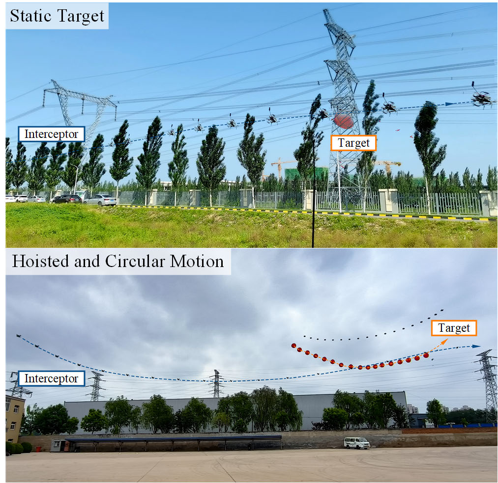
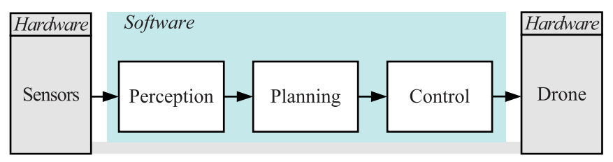
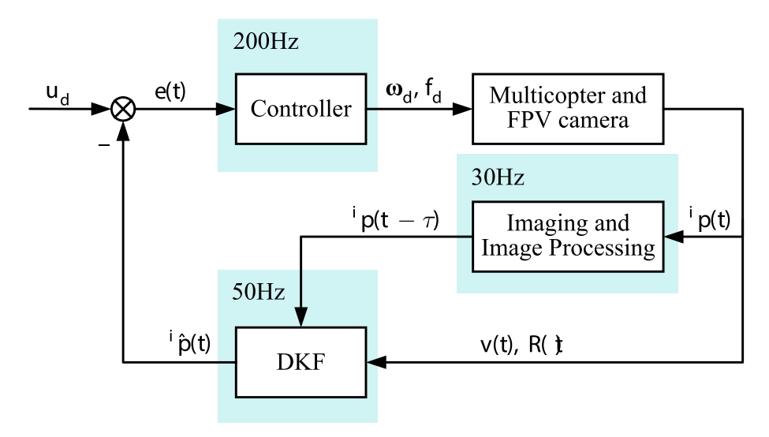
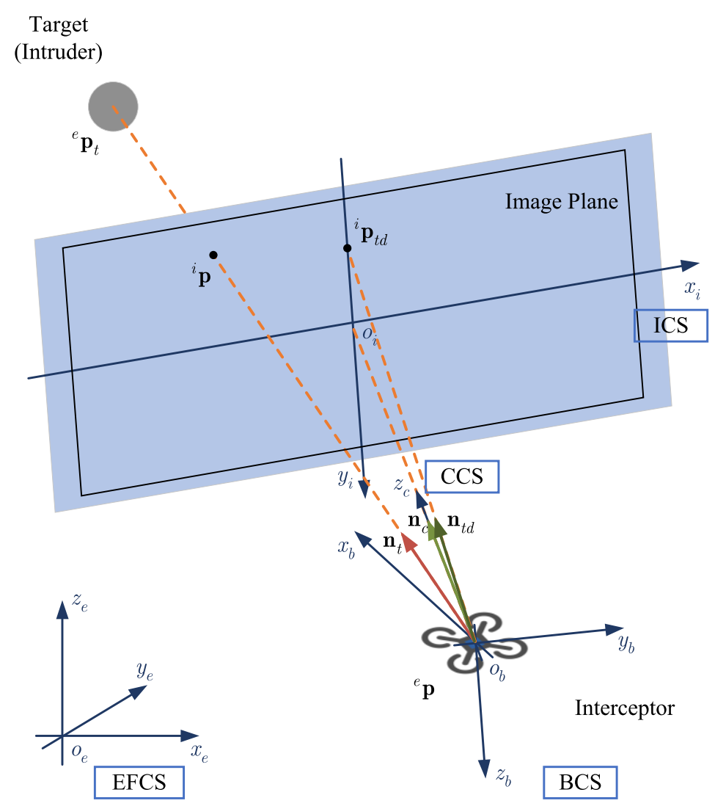
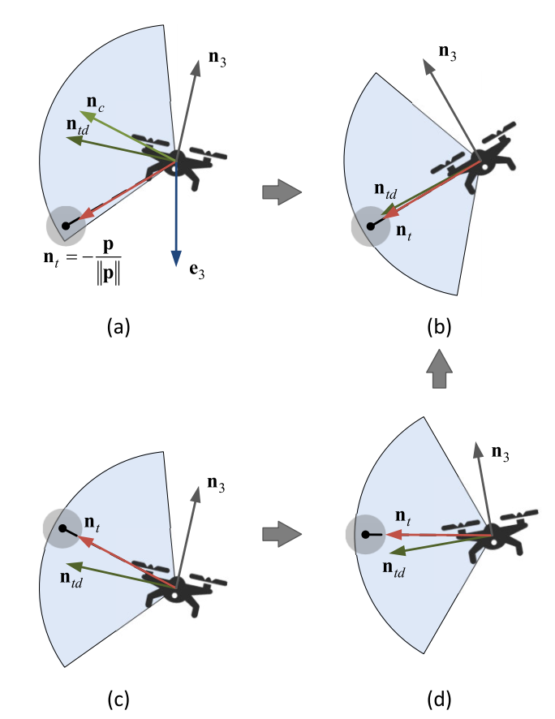
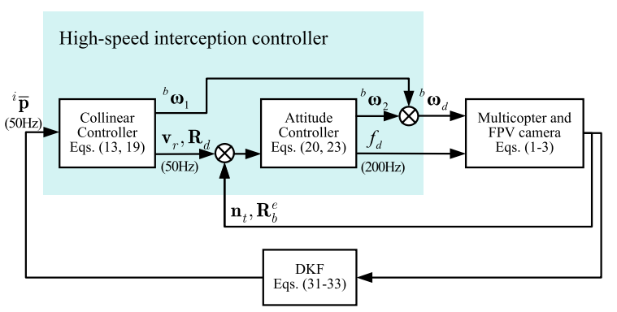
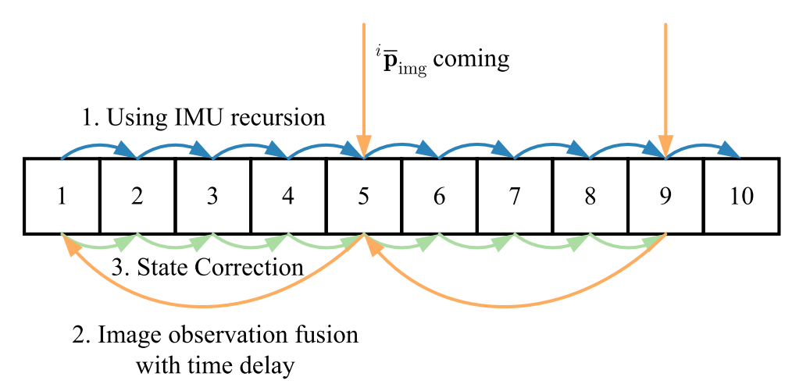
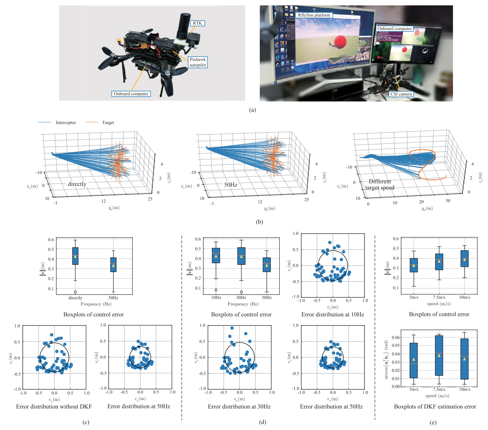
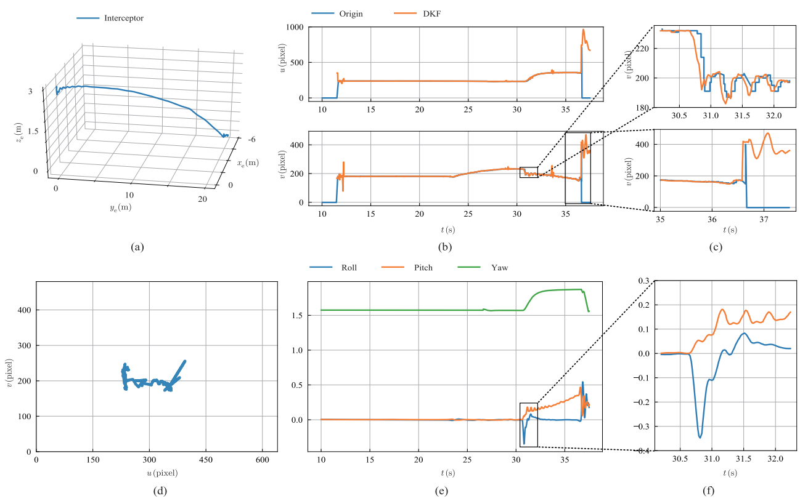

| 标题 | High-Speed Interception Multicopter Control by Image-Based Visual Servoing（基于图像视觉伺服的高速拦截多旋翼控制） |
| 作者 | Kun Yang（杨昆）、Chenggang Bai（白成刚）、Zhikun She（佘志坤）、Quan Quan（全权，通讯作者，Senior Member IEEE） |
| 单位 | 北京航空航天大学，自动化科学与电气工程学院 / 数学科学学院 |
| 发表 | IEEE Transactions on Control Systems Technology，2025年1月，Vol. 33, No. 1, pp. 119–135 |
| DOI / 链接 | 10.1109/TCST.2024.3451293 | 投稿: 2023-11-17 | 修回: 2024-06-22 | 接收: 2024-08-21 | 发表: 2024-09-11 | 视频: YouTube |
| 资助 | 国家重点研发计划 (2022YFA1005103)、国家自然科学基金 (12371452) |
| TL;DR | 提出一种基于图像视觉伺服（IBVS）的高速多旋翼拦截方案——拦截无人机仅依靠固联前视单目相机（无云台），在 SO(3) 上设计大机动 IBVS 控制器（俯仰角可达 50 度），配合延迟卡尔曼滤波器（DKF）补偿约 80 ms 图像处理延迟和低帧率问题。HITL 仿真 50 次统计验证：CEP = 0.332 m（比无 DKF 降低 18.6%）；实飞验证：静态目标拦截终端速度 21 m/s，机动目标拦截 10.5 m/s。这是极为罕见的多旋翼完全自主视觉高速拦截实验。 |
| 灵感来源 | 启发产生的洞察 | 类型 |
|---|---|---|
| Gamagedara et al. (2021) — 延迟 RTK-GPS 的四旋翼状态估计 | 在延迟期间用次优估计正常更新协方差，延迟测量到达时仅附加一个修正项——避免了完全重积分，同时保证延迟后最优。本文将这一思想从 GPS 延迟迁移到视觉延迟 | 方法迁移 |
| Barrier Lyapunov Function (Tee et al. 2009) | BLF 在状态逼近约束边界时使 Lyapunov 导数趋向无穷大——自然保证约束永不被违反。这比硬约束（if 目标接近边缘 then 最大转弯）更优雅——连续可微，可嵌入 Lyapunov 稳定性证明 | 数学工具 |
| SO(3) 几何控制 (Lee et al. 2010, Yu et al. 2015) | 直接在 SO(3) 流形上设计姿态控制器——用旋转矩阵而非欧拉角，全局无奇异性，指数/对数映射提供流形上的自然运算。消除了大角度下欧拉角线性化的根本缺陷 | 架构创新 |
| 多旋翼欠驱动的共线几何直觉 | 推力方向与机体 $z_b$ 轴固联——加速度方向与姿态耦合。如果设计视线向量 $\mathbf{n}_{td}$ 尽可能接近推力方向 $\mathbf{n}_f$（在 FOV 约束内），则大部分加速度指向目标，拦截速度最快 | 几何直觉 |
本文的架构可以一句话概括：把图像特征直接变成 SO(3) 上的期望姿态。整条链路上只有两处是本文自己插进去的——控制几何（SO(3) 共线控制器）与状态估计（DKF 延时观测器），其余都是机载标配硬件与内环飞控。两图中紫色 = 本文创新，橙色 = 感知/目标，红色 = 机体执行。
flowchart LR
subgraph IN["机载感知"]
CAM["前视单目相机
Monocular"]
IMU["惯性测量单元
IMU"]
DET["颜色识别
Color Detect"]
end
subgraph EST["延时观测器（本文创新②）"]
DKF["延迟卡尔曼滤波
DKF"]
end
subgraph CTRL["SO(3) 共线控制（本文创新①）"]
OUT["外环共线控制
Collinear"]
ATT["内环姿态控制
Attitude"]
end
subgraph PLANT["执行"]
MOT["电机与桨
Pixhawk"]
end
CAM -->|"图像 30 Hz"| DET
DET -->|"像素坐标"| DKF
IMU -->|"递推 200 Hz"| DKF
IMU -->|"姿态"| ATT
DKF -->|"特征估计 50 Hz"| OUT
OUT -->|"期望姿态"| ATT
ATT -->|"推力 f, 角速率 ω"| MOT
classDef sensor fill:#fef7ed,stroke:#f59e0b,stroke-width:2px,color:#92400e
classDef novel fill:#f0ebfd,stroke:#8b5cf6,stroke-width:3px,color:#6d28d9
classDef exec fill:#ffe4e6,stroke:#f43f5e,stroke-width:2px,color:#be123c
class CAM,IMU,DET sensor
class DKF,OUT,ATT novel
class MOT exec
频率对照：图像 30 Hz、延迟约 80 ms → DKF 输出 50 Hz → 外环 50 Hz / 内环 200 Hz。外环负责把目标始终按在 120° 前视视场内（大机动下俯仰可达 50°），内环负责在 20 m/s 量级下跟住参考姿态；相机与 IMU 均固联于机体，无外部定位。
flowchart LR TGT["目标
Target"] IMG["图像测量
Vision"] COR["回退修正
Correction"] REP["IMU 回放
IMU Replay"] EST["特征估计
Estimate"] CON["共线控制器
Collinear"] ATT["内环姿态
Attitude"] UAV["多旋翼
Quadrotor"] TGT -->|"120° FOV"| IMG IMG -->|"延迟 80 ms"| COR COR -->|"修正后状态"| REP REP -->|"递推至当前"| EST EST -->|"当前特征 50 Hz"| CON CON -->|"期望姿态 50 Hz"| ATT ATT -->|"推力 f, 角速率 ω"| UAV UAV -->|"接近拦截"| TGT UAV -.->|"IMU 200 Hz"| REP UAV -.->|"姿态"| ATT classDef vis fill:#fef7ed,stroke:#f59e0b,stroke-width:2px,color:#92400e classDef novel fill:#f0ebfd,stroke:#8b5cf6,stroke-width:3px,color:#6d28d9 classDef exec fill:#ffe4e6,stroke:#f43f5e,stroke-width:2px,color:#be123c class TGT,IMG vis class COR,REP,EST,CON,ATT novel class UAV exec
关键在“回退—前推”：延迟 D 周期到达的图像只用于修正 t(k−D) 时刻的历史状态，再用缓存的 IMU 序列前推到当前时刻，于是 200 Hz 的控制回路始终有 50 Hz 的“当前”特征估计可用，而不是盲推。目标短暂出视野时 DKF 继续外推，重新入画后再被修正——HITL 中 CEP 由无 DKF 的 0.408 m 降到 0.332 m。
| 类别 | 内容 | 维度 / 频率 |
|---|---|---|
| 输入 | 机载前视单目相机图像（120度 FOV，经颜色识别得目标图像坐标）+ IMU 数据（陀螺角速度增量 + 加速度计比力增量） | 图像: 640x480, 30 Hz, ~80ms延迟；IMU: 6轴, 200 Hz |
| 输出 | 推力指令 $f_d \in [0, f_m]$ + 期望角速度 $^b\boldsymbol{\omega}_d \in \mathbb{R}^3$（经饱和约束） | 外环 50 Hz, 内环 200 Hz |
| 目标 | 在仅依赖机载视觉+IMU的条件下，实现高速（>20 m/s）、大机动（俯仰达50度）的在线自主拦截 | CEP50Hz = 0.332 m (HITL)；实飞终端速度 21 m/s |
这是一个视觉伺服控制 + 状态估计的联合问题——不是单纯的感知或规划。在图像延迟、低帧率、目标易丢失的极端感知条件下，通过重新设计控制几何（SO(3)）和滤波架构（延迟处理），实现高速大规模的自主拦截。场景：室外开放空域、单入侵目标（静态气球或机动多旋翼）、拦截器仅依赖机载传感器和计算。核心方法论：将"拦截"这一物理任务映射为"三线共线"的几何控制目标——视线向量、速度向量、目标向量共线，再用 Lyapunov 稳定性理论保证收敛。
表头用英文，正文用中文
| Prior Method | Core Idea | Why It Fails |
|---|---|---|
| Location Estimation-Based Interception（基于位置估计的拦截方法，如 MBZIRC 2020 方案） | 完整感知-规划-控制管线：先用视觉+激光雷达估计目标 3D 位置，规划拦截轨迹，再跟踪控制——三段式架构 | 依赖估计精度、规划合理性和控制精度的三重链路——每个环节的误差和延迟都累积到下个环节。单目深度估计本身就极不准确（缺乏基线/已知尺寸），风干扰进一步恶化 3D 估计。本文 PBVS 对比实验直接证实：目标锁定失败 + 3D 位置估计不准 → 拦截失败。 |
| Learning-Based Methods（基于学习的方法，如 Deep Drone Racing） | 用神经网络替代传统感知/规划/控制模块，从图像直接输出控制指令，通过领域随机化（domain randomization）从仿真迁移到真实 | 真实世界数据采集极其困难——高速拦截场景的训练数据几乎无法获取（碰撞一次飞机就损毁）。Sim-to-Real 的领域随机化虽改善泛化，但在安全攸关的拦截任务中，策略网络的不可解释性仍是根本障碍。实际飞行速度和规模远不及本文（20 m/s）。 |
| Previous IBVS Method（本组前作，Yang & Quan, ICRA 2020） | 前向单目相机 + IBVS 控制器，使用小角度近似和欧拉角参数化，在 5 m/s 下成功拦截 | 小角度近似在高速时完全失效——俯仰角 > 30 度时欧拉角线性化假设不再成立，控制器不稳定。同时无滤波处理图像延迟——5 m/s 时延迟影响尚可接受，但 20 m/s 时必须补偿（80 ms = 1.6 m 误差）。HITL 对比：CEP_previous = 0.457 m vs CEP_proposed = 0.332 m（提升 27.4%）。 |
| PBVS with Kalman Filter（基于位置的视觉伺服 + 卡尔曼滤波平滑） | 先估计目标 3D 位置，再用卡尔曼滤波平滑估计，最后做位置控制跟踪 | 3D 位置估计严重依赖目标深度信息——单目相机无法直接获取深度，需额外假设（已知目标尺寸）或立体视觉。此外，位置级控制需要精确的拦截器自身定位（GPS/外部动捕），室外场景定位精度有限。对比实验中 PBVS 因目标锁定失败和 3D 估计延迟而 miss。 |
本文的方法由两个互补的部分组成：SO(3) 上的 IBVS 共线控制器（解决大姿态控制问题）和延迟卡尔曼滤波器（解决感知延迟问题）。控制器分内外双环——外环（50 Hz）确保目标锁定在 FOV 内并计算期望加速度，内环（200 Hz）驱动姿态跟踪期望值。DKF 在 IMU 速率（200 Hz）上递推 18 维状态，在延迟图像到达时回退修正并前向传播。
| 参数 | 取值 | 含义 | 为什么取这个值 |
|---|---|---|---|
| $k_1$（位置增益） | $k_1 > 0$ | 期望速度 $v_{rd} = k_1\|p_r\|\mathbf{n}_t$——距离越远，期望速度越大 | 决定了拦截速度与距离的线性关系——$k_1$ 过大会在接近目标时惯性过大冲过目标 |
| $k_2$（速度误差增益） | $k_2 > 0$ | 速度跟踪误差 $\mathbf{z}_2$ 的阻尼系数 | 与 $k_1$ 共同决定闭环动态——$k_2$ 越大速度收敛越快，但过大会导致振荡 |
| $k_b$（障碍常数） | 由 FOV 反推——满足 $|\mathbf{n}_{td}^T\mathbf{n}_t(0)| > 1 - k_b$ | BLF 的边界参数——$z_1$ 不能超过 $k_b$ | 根据 120 度 FOV 反设计——FOV 边界对应某最大 $z_1$ 值，$k_b$ 应略小于此值 |
| DKF 频率 | 50 Hz（实飞采用） | DKF 观测器运行频率 | HITL 对比：CEP10Hz=0.425m, CEP30Hz=0.423m, CEP50Hz=0.332m——50 Hz 最优，C++/Eigen 实时可行 |
| 图像延迟 | 约 80 ms | 相机曝光+传输+颜色识别的总延迟 | 通过相机参数+程序计时器实测，以及实验捕获计时器校准 |
| 推重比 | 约 3:1 | 最大推力 / 整机重量 | 确保 50 度俯仰时垂直分量仍有约 1.93 倍自重——足够的推力余量 |
| 状态向量维数 | 18 维 | $[\mathbf{q}(4), \mathbf{p}_r(3), \mathbf{v}_r(3), {}^i\tilde{\mathbf{p}}(2), \mathbf{b}_{gyr}(3), \mathbf{b}_{acc}(3)]$ | 包含拦截所需全部状态——目标加速度作为扰动不估计（视觉不可观），以降低维数和计算量 |
理解本文的高速IBVS拦截需要掌握四个核心原理：SO(3)几何控制（为什么放弃欧拉角）、Barrier Lyapunov函数（如何数学保证FOV不丢失）、共线控制的几何直觉（如何在欠驱动约束下最大化拦截加速度）、DKF的回退-传播架构（如何用IMU补偿视觉延迟）。
关键设计：保持 yaw 不变——$\mathbf{R}_d = \mathbf{R}_{\text{tilt}} \mathbf{R}_b^e$ 仅改变 pitch 和 roll，维持当前 yaw。原因：yaw 运动会使目标在图像平面上横向漂移，增加图像处理和状态估计的负担。保持 yaw 不变简化了控制问题，且不损失拦截性能（拦截主要依赖前向加速度，由 pitch 产生）。
工程直觉：想象一个碗——碗壁在边界处无限高。球（系统状态）在碗里滚动，摩擦力（控制阻尼）使球能量不断减小。因为碗壁无限高，球永远不会滚出去。BLF 将"FOV 约束"转化为"无限高的势垒"——这比 if-else 的硬约束更优雅，因为它连续可微，可以嵌入 Lyapunov 稳定性证明。
核心几何思想：多旋翼的推力方向沿机体 $z_b$ 轴——加速度方向与姿态耦合。如果让设计视线向量 $\mathbf{n}_{td}$ 尽可能接近推力方向 $\mathbf{n}_f$（在不违反 FOV 约束的前提下），则当我锁定 $\mathbf{n}_{td}$ 对准目标时，推力也自然对准目标——大部分加速度指向目标，拦截速度最快。
目标在下方时，推力方向（朝下/前）恰好与目标方向接近——几乎不需要额外姿态调整。只需微调 pitch 使 $\mathbf{n}_{td} \approx \mathbf{n}_f$ 即可同时满足 FOV 约束和最大加速度方向。这是"最有利"的拦截构型。
目标在上方时，如果直接让 $\mathbf{n}_{td} = \mathbf{n}_t$（向上看），则推力方向（前-下）与目标方向（上）几乎垂直——加速度几乎不指向目标。正确策略：先让 $\mathbf{n}_{td}$ 取 FOV 边缘的最低位置（与推力方向最接近），在保持目标可见的同时让大部分加速度指向目标方向——先加速再爬升。
论文原图截图。图片保存至 figures/ 子目录。命名 fig1.png ~ fig9.png 即可自动显示。

请将截图保存为figures/fig1.png图 1（左）展示了用多旋翼拦截入侵无人机的场景——携带固联前视相机的拦截器自主检测并飞向入侵目标。图 2（右）展示了经典的自主拦截/竞速系统架构——硬件层（无人机+传感器）和软件层（感知+规划+控制）。

请将截图保存为figures/fig2.png五个坐标系：{e} = 地球固联系（全局惯性系）；{b} = 机体坐标系；{c} = 相机坐标系（固联于机体，光轴沿前向）；{i} = 图像坐标系（2D归一化坐标）。

请将截图保存为figures/fig3.png图 5展示了两种拦截场景的几何差异——(a-b)下层目标：推力方向与目标方向自然接近，直接共线即可加速；(c-d-b)上层目标：需要先将设计视线取在FOV下边缘（与推力最近），加速飞向目标下方后再抬头拉近——这是欠驱动系统的几何最优策略。
图 6展示了完整的控制方案——外环共线控制（50 Hz）接收图像特征和速度，输出期望加速度 $\mathbf{a}_d$；$\mathbf{a}_d$ 经推力映射转换为期望力方向 $\mathbf{n}_{fd}$ 和推力 $f_d$；$\mathbf{n}_{fd}$ 与当前力方向通过指数映射得期望姿态 $\mathbf{R}_d$（仅pitch-roll）；内环SO(3)姿态控制（200 Hz）追踪 $\mathbf{R}_d$ 并输出角速度指令。

请将截图保存为figures/fig4.png图 8展示了 HITL 仿真的核心统计结果——共四组对照实验，每组 50 次重复，用 CEP（圆概率误差）量化评估。

请将截图保存为figures/fig5.png本图展示了单次 HITL 拦截的完整数据流。

请将截图保存为figures/fig6.png本图展示了本文方法与之前 IBVS 方法（Yang & Quan, ICRA 2020）在相同初始条件下的 50 次仿真对比。

请将截图保存为figures/fig7.png本图展示了静态目标（红色气球，距地 3 m）的实飞拦截。测试了 5 种速度：5/10/15/19/21 m/s。

请将截图保存为figures/fig8.png本图展示了机动目标的实飞拦截——目标（气球）由另一台多旋翼携带做圆形轨迹运动（6 m/s），且受风干扰。

请将截图保存为figures/fig9.png本图展示了PBVS 方法在相同场景（氦气球约 2 m 高）下的拦截失败——拦截器 miss 了目标。
| 数据问题 | 潜在困难 | 严重程度 |
|---|---|---|
| 图像延迟抖动（80-120 ms 波动） | DKF 假设 $t_D$ 恒定——当实际延迟偏离假设时，回退修正的时刻不对应真实的延迟周期 → 状态估计偏移。高动态场景下影响更显著 | ★★★★ |
| 目标短暂消失/遮挡 | DKF 在无图像时纯靠 IMU 递推——目标加速度相对于惯性空间不可观（IMU 无法感知目标运动），位置估计以 $a_t \times t^2$ 漂移。1 秒盲推 = 最多数米误差（假设目标 5 m/s² 机动） | ★★★★★ |
| 光照变化（明亮→阴影/逆光） | 颜色识别对光照敏感——逆光时颜色饱和/变暗，检测置信度下降或完全丢失。HITL 仿真中无此问题（完美虚拟图像），实飞中可能是实际瓶颈 | ★★★ |
| GPS 故障/拒止 | 虽拦截控制器不依赖 GPS（仅用于离线分析），但 Pixhawk 内环依赖 GPS/气压计/加速度计融合提供高度和速度估计。GPS 拒止下需依赖纯 VIO——目前未测试 | ★★★ |
| 风干扰（阵风导致突然扰动） | 风抗扰能力有限——阵风可能导致相机 FOV 大幅偏离目标。BLF 在理论上能应对（增益自适应增大），但饱和的角速度和推力可能限制理论保证的实际可达性 | ★★★ |
| 参考文献 | 为什么重要 |
|---|---|
| Yang & Quan (ICRA 2020) — An autonomous intercept drone with image-based visual servo | 本文的直接前作——用传统 IBVS 实现 5 m/s 拦截。本文在此基础上将速度提升到 20 m/s（4 倍），加入 SO(3) 控制器和 DKF——是递进式研究的典范。 |
| Gamagedara, Lee & Snyder (IEEE TAES 2021) — Quadrotor state estimation with IMU and delayed RTK GPS | DKF 的方法论来源——提出了"延迟期间次优 + 延迟后最优修正"的 GPS 延迟补偿策略。本文将其从 GPS 领域迁移到视觉延迟——是跨领域迁移的成功案例。 |
| Tee, Ge & Tay (Automatica 2009) — Barrier Lyapunov functions for output-constrained nonlinear systems | BLF 的奠基性文献——提供了将输出约束转化为 Lyapunov 稳定性保证的数学工具。本文引用其 Lemma 1 证明目标永远在 FOV 内。 |
| Lee, Leok & McClamroch (CDC 2010) — Geometric tracking control of a quadrotor UAV on SE(3) | SO(3) 几何控制的经典文献——在 SE(3)（位置+姿态）上设计四旋翼跟踪控制器的框架。本文内环姿态控制器继承其设计思想。 |
| Dai, Ke, Quan & Cai (AST 2021) — RFlySim: Automatic test platform for UAV autopilot systems | RflySim 平台文献——本文全部 HITL 仿真基于此平台。北航可靠飞行控制研究组的无人机仿真生态系统，支持 MBD 和自动化测试。 |
| Chaumette & Hutchinson (IEEE RAM 2006) — Visual servo control, Part I: Basic approaches | IBVS 经典综述——定义了图像雅可比矩阵 $\mathbf{L}_s$ 和 IBVS 基本框架。任何做视觉伺服的研究者都应先读此文。 |
对象：High-Speed Interception Multicopter Control by Image-Based Visual Servoing（Yang, Bai, She & Quan，IEEE TCST 33(1):119–135, 2025）第 119–135 页（17 页）。公式范围：正文与附录 A（式 (1)–(43)）、B（式 (44)–(51)）、C（式 (52)–(55) 与矩阵 $M({}^{1}q),M_1..M_5$） 的全部 55 个编号公式 + 全部无编号核心式（$SO(3)$ 定义、$[\cdot]_\times$ 与 $\mathrm{vex}$ 映射、$\ln(\cdot)$ 级数、四元数/18 维状态定义、离散状态方程、FOV 锥 $C$，本文补编号 (D1)–(D7)）+ 两个算法（Algorithm 1 拦截控制器、Algorithm 2 延迟滤波器）。
方法：本文不是复述论文文字，而是：
诚实声明（重要）：① 本片段由我以 _derivation_work/4-interception/fulltext.txt（PDF 全文文本抽取，逐页标记）为唯一公式来源完成，当前模型无法读取页面图像，因此矩阵/上下标密集处（式 (19)(22)、18×18 的 F/G、M4/M5 等）以文本抽取为准并经数学自洽性检验，建议人工按下列页码复核：第 4 页式 (1)–(4)；第 7 页式 (19)–(23)；第 8 页式 (28)–(33) 与 F/G 矩阵；第 15 页式 (41)–(43)；第 16 页式 (54) 与 M4/M5；第 6、9 页 Algorithm 1/2 的伪代码框（文本抽取只有签名行）。② 该论文未公开官方代码，故交叉验证是"独立重推 + 数值核算 + 文本互证"，无代码级验证；文中所有"与论文一致"均指与文本抽取的一致。③ 本片段第 6 节已有浅层公式，本节全部重做且更深（覆盖附录 B/C 的 DKF 全部雅可比）。
| 公式 | 内容 | 独立重推/数值核算的结论 |
|---|---|---|
| (1) | 6-DOF 多旋翼刚体模型（含转子阻力） | ✅ 与牛顿–欧拉标准形式一致；⚠️ $g=[0,0,g]^T$ 符号依赖 $z_e$ 约定（实飞数据表明 $z$ 向上 → $g=-9.81$，论文未明说） |
| (2) | 推力模型 $^{\mathrm e}f=fR_b^{\mathrm e}R_fe_3$ | ✅ 正确；$f_m$ 与推重比≈3 相容（$f_m\approx3mg$）；但"最大加速度 5 m/s²"不由公式解释（见 §3） |
| (3) | 目标点质量模型 | ✅ 平凡定义；$a_t$ 视为扰动是全文一致的设计前提 |
| (4)(5) | 透视成像与 FOV 锥约束 | ✅ 标准针孔模型；⚠️ 数值核算表明 120° FOV 与 50° 俯仰"目标不丢"需要相机下倾安装角约 6–10°（即 $R_c^{\mathrm b}\neq I$ 的旁证，见 §5.3） |
| (6) | IBVS 图像雅可比 $L_s$ | ✅ 与 Chaumette–Hutchinson [29] 标准交互矩阵逐项一致（独立重推见 §6）；注意本文的 IBVS 只用于 DKF 传递，控制器本身不直接用 $L_s$ |
| (7)–(10) | IMU 测量模型（陀螺/加计 + 随机游走偏置） | ✅ 比力方程 (9) 推导正确；$z$ 向上时 $g$ 取负号 |
| (11) | 延迟图像测量 | ✅ 定义清晰；80 ms@200 Hz=16 个 IMU 周期，@DKF 50 Hz=4 周期（图 7 画 4 周期，表述易误解，见 §8.2） |
| (12)(13) | 障碍 Lyapunov 函数与视线对齐角速度 $^{\mathrm b}\omega_1$ | ✅ 推导逐行复现；⚠️ $k_b$ 数值未给；要使"BLF 约束=FOV 约束"需 $k_b\lt1-\cos(\alpha_{vfov}/2)\approx0.24$（120° 相机），论文未讨论（见 §9.3） |
| (14)–(16) | 速度共线控制（$v_{rd}$、$z_2$） | ✅ 直接成立；注意 $v_{rd}=-k_1p_r=k_1\lVert p_r\rVert n_t$ 需要深度 $\lVert p_r\rVert$（见 §10.2 疑点） |
| (17)–(19) | $L_3$ 与期望加速度 $a_d$ | ⚠️ 按文本抽取，(19) 交叉项系数为 $m/\lVert p_r\rVert$ 且 $-p_r$ 无系数：与 (41) 的精确抵消矛盾（精确抵消需要系数 $1/\lVert p_r\rVert$、$p_r$ 系数 1），且量纲有疑——需人工复核第 7 页原文（见 §11.5） |
| (20)(21)(23) | 推力方向与幅值 | ✅ (21) 由 (20) 直接解出；悬停核算 $f_d=mg$ 正确；(23) 是"期望推力在 $n_f$ 上的投影"+饱和，物理合理 |
| (22) | $R_{tilt}=e^{\varphi[r]_\times}$ | ⚠️ 按文本抽取，$r=n_f\times n_{fd}$ 未归一化（$\lVert r\rVert=\sin\varphi$），而 Rodrigues 公式要求单位轴：按印刷式 $R_{tilt}$ 非正交（$\varphi=50°$ 时旋转系数 $\sin\theta'=\sin^2\varphi$ 对应 $\theta'\approx35.9°$ 而非 50°）；正确写法应归一化 $r$（见 §13.2）——需人工复核第 7 页 |
| (24)–(27) | 内环姿态控制（Frobenius 误差） | ✅ 迹恒等式 $\mathrm{tr}(A[b]_\times)=-\mathrm{vex}(A-A^T)^Tb$ 独立验证；(26) 使 $\dot L_4=-\lVert\mathrm{vex}(\cdot)\rVert^2$；对跖点（180°）是 $\mathrm{vex}=0$ 的不稳定平衡，值得注意 |
| (28)(29) | 总控制器与饱和函数 | ✅ 饱和只缩放幅值不改方向 → $\dot L\le0$ 保持；(28) 与 (13)(23)(26) 完全闭合 |
| (30)(31) | EKF 预测步 | ✅ 标准卡尔曼形式 |
| (32)–(36) | 延迟测量的修正步 | ✅ 标准 KF 修正 + "回退-修正-前传"（out-of-sequence 架构）；"延迟期间次优、之后最优"与 [25] 一致；$\Delta t$=50 Hz 时 $D=4$ 与图 7 吻合 |
| (37)–(43) | 附录 A：定理 1 证明 | ⚠️ 证明骨架（BLF+LaSalle）正确，但 (41) 依赖 (19) 的精确抵消（疑点同 (19)）；定理的初始集合 $S=\{x\mid |n_{td}^Tx|\gt1-k_b\}$ 的绝对值把"视线反向"情形也算入（此时 $z_1\gt k_b$ 违反 BLF 定义域），应为 $n_{td}^Tn_t\gt1-k_b$（无绝对值，见 §16.7） |
| (44)(45) | 四元数离散传递 | ✅ $M({}^{1}q)$ 即 Hamilton 右乘矩阵；$F^{q_k}_{b_{gyr,k-1}}=-\tfrac{\Delta t}{2}\Xi(q)$ 独立重推逐项一致（含符号，见 §18） |
| (46)–(50) | 位置/速度传递 | ✅ 梯形积分 (46)+(47) 成立（需注意 $\partial v_{r,k}/\partial v_{r,k-1}=I$ 的易错点）；(48)–(50) 成立；$M_1..M_3$ 与 $\partial(Ra)/\partial q=2[(M_1a)^T;(M_2a)^T;(M_3a)^T]$ 逐项一致 |
| (51)–(55) | 图像状态传递 | ✅ (51)(53)(55) 与 (6) 一致；(54) 成立但含"深度 $p_{zc}$ 视为常数"的近似（丢了 $\partial z/\partial x=-z/x$ 耦合项，见 §20.1/§20.4）；⚠️ (52) 的 $M_4/M_5$ 按文本抽取与正确雅可比对不上、且缺 $R_c^{\mathrm b}$——需人工复核第 16 页 |
| F/G 结构 | 18×18 状态转移阵 / 18×6 噪声阵 | ⚠️ $G$ 的偏置两行为 0，与 (8)(10) 的 Wiener 过程矛盾；且 $w_k\triangleq[n_{bgyr}^T,n_{bacc}^T]^T$ 的宣称与 $G$ 块实际对应的"传感器噪声 $n_{gyr},n_{acc}$"口径不一（见 §21） |
| Algorithm 1/2 | 拦截控制器 / 延迟滤波器伪代码 | 文本抽取只有签名行；本文按 (28) 与 (30)–(55) 逐行重构流程，伪代码原文请人工复核第 6、9 页（见 §17、§23） |
论文写"$g$ is the local gravitational acceleration, $g=[0\ 0\ g]^T$"。若 $z_e$ 向上（实飞数据如此），则必须有 $g=-9.81\ \text{m/s}^2$（即 $g=[0,0,-9.81]^T$）；若把 $g$ 当成 $+9.81$ 代入 (1)(9)(20)(21)(23)，整个动力学和推力换算符号全反。论文把 $g$ 写成"标量可正可负"的隐式约定（(9) 写 $ge_3$ 而非 $g$，说明 $g$ 是带符号标量）。本文下文一律取 $g=[0,0,-9.81]^T$（$z$ 向上），并在 (20)(21)(23) 的核算中验证这一选择与悬停/爬升实验一致。
论文原文（§II-A-2）：
第 1 行是位置定义（$\dot p=v$）。第 2 行是牛顿第二定律在 EFCS：$m\,^{\mathrm e}\dot v=mg+{}^{\mathrm e}f+{}^{\mathrm e}f_{drag}$，两边除以 $m$ 即 (1) 第二行。要点全在阻力模型 (1-drag) 上：转子阻力是多旋翼高速飞行的主要阻尼 [26]，其物理来源是桨叶挥舞/诱导阻力，近似为与机体速度成正比、方向相反的力：
$$^{\mathrm b}f_{drag}=-D\,{}^{\mathrm b}v=-D\,R_b^{\mathrm eT}\,{}^{\mathrm e}v\qquad\Longrightarrow\qquad {}^{\mathrm e}f_{drag}=R_b^{\mathrm e}\,{}^{\mathrm b}f_{drag}=-R_b^{\mathrm e}DR_b^{\mathrm eT}\,{}^{\mathrm e}v\tag{1-drag重推}$$
即：先把速度旋到机体系、乘阻力系数矩阵取负、再旋回地面系。三个步骤缺一不可；$D$ 对角但非标量（$d_x,d_y$ 来自旋翼平面的水平阻力、$d_z$ 来自轴向阻力，通常 $d_z\neq d_x$），所以 $^{\mathrm e}f_{drag}$ 一般不平行于 $-^{\mathrm e}v$（姿态倾斜时阻力方向偏转）——这是 (20) 里 $^{\mathrm e}f_{drag}$ 不能简单写成 $-D\,^{\mathrm e}v$ 的原因。
第 3 行是旋转运动学：$b$ 系相对 $e$ 系以角速度 $^{\mathrm e}\omega=R_b^{\mathrm e}\,{}^{\mathrm b}\omega$（地面系分量）旋转，则任意固连于机体的向量 $b$ 满足 $\dot b={}^{\mathrm e}\omega\times b$。取 $R_b^{\mathrm e}$ 的三列 $r_i$（各为机体系基向量在 e 系的分量），逐列 $\dot r_i={}^{\mathrm e}\omega\times r_i=[R_b^{\mathrm e}\,{}^{\mathrm b}\omega]_\times r_i$，故 $\dot R_b^{\mathrm e}=[R_b^{\mathrm e}\,{}^{\mathrm b}\omega]_\times R_b^{\mathrm e}$；再用性质 $R[x]_\times R^T=[Rx]_\times$ 得 $[R_b^{\mathrm e}\,{}^{\mathrm b}\omega]_\times=R_b^{\mathrm e}[{}^{\mathrm b}\omega]_\times R_b^{\mathrm eT}$，代回 $\dot R_b^{\mathrm e}=R_b^{\mathrm e}[{}^{\mathrm b}\omega]_\times R_b^{\mathrm eT}R_b^{\mathrm e}=R_b^{\mathrm e}[{}^{\mathrm b}\omega]_\times$ ✅。
第 4 行是欧拉刚体方程在转动参考系：惯性系角动量 $H=J\,^{\mathrm b}\omega$（$J$ 在机体系），角动量定理 $\left.\frac{dH}{dt}\right|_e=\tau_{ext}$，用转动参考系求导公式 $\left.\frac{dH}{dt}\right|_e=\left.\frac{dH}{dt}\right|_b+{}^{\mathrm b}\omega\times H$，得
$$J\,{}^{\mathrm b}\dot\omega+{}^{\mathrm b}\omega\times(J\,{}^{\mathrm b}\omega)=G_a+\tau\qquad\Longrightarrow\qquad J\,{}^{\mathrm b}\dot\omega=-{}^{\mathrm b}\omega\times(J\,{}^{\mathrm b}\omega)+G_a+\tau\tag{1-4重推}$$
✅ 与 (1) 第四行一致。$G_a$ 是陀螺力矩（桨盘旋转轴随机体转动产生的反作用力矩），$\tau$ 是差速螺旋桨力矩。
数值核算：论文硬件"thrust-to-weight ratio about 3"→ $f_m\approx3mg$。若整机 1.5 kg（5 寸机典型值），$f_m\approx44$ N。悬停 $f=mg$ 只用了 1/3 的推力裕度，垂直方向还剩 $2mg\approx19.6\ \text{m/s}^2$ 的加速度裕度——而论文说"can accelerate up to 5 m/s²"。这个 5 m/s² 远小于推重比允许的 19.6 m/s²，说明加速度上限来自控制器增益/阻力/安全限制而非推力饱和（§24 数值总账里再对账）。
✅ 无实质问题。注意 $p_r$ 的方向约定：$p_r=^{\mathrm e}p-{}^{\mathrm e}p_t$ 是"从目标指向拦截器"，所以 $n_t=-p_r/\lVert p_r\rVert$ 才"从拦截器指向目标"（见 (4)），这个负号在 §5、§16 反复用到，不能省。
论文 Assumption 1：相机原点与机体原点重合（$t_c^{\mathrm b}=0$），所以当 $\lVert p_r\rVert\to0$（拦截器撞上目标）时，相机也撞上目标——"it is considered a successful interception when the camera is in contact with the target"。这使得 (4) 的等号在全过程成立：$n_t$ 既是几何 LOS 又是图像射线方向，控制与感知共享同一个量，无需任何坐标重建。
$n_{td}$（designed LOS）= 光轴 $n_c$ 方向的"设计视线"，在机体系固定（随姿态转动，§16.1 用 $\dot n_{td}={}^{\mathrm e}\omega\times n_{td}$）。设计原则："crafted to approximate the force vector $n_f$ as closely as possible within the FOV"——$n_{td}$ 越靠近推力方向 $n_f$，共线控制达成后加速度沿 $n_{td}$ 的分量越大、拦截速度越高（§7.3 的几何直觉）。数学上 $n_{td}=R_b^{\mathrm e}R_c^{\mathrm b}e_3$（光轴方向），或取其与 $n_f$ 折中的常值机体系向量 $^{\mathrm b}n_{td}$。于是 $z_1=1-n_{td}^Tn_t$ 就是"目标偏离图像中心"的余弦距离（见 §9）。
实飞硬件："front CSI camera with a 120° FOV"，最大俯仰 50°，且"kept the target in the FOV until the final interception"。若 120° 是对角视场（摄像头规格惯例），16:9 传感器下 $HFOV=2\arctan(\tan60°\cdot16/\sqrt{16^2+9^2})\approx113°$，$VFOV=2\arctan(\tan60°\cdot9/\sqrt{16^2+9^2})\approx80.6°$；若 120° 是水平视场，则 $VFOV=2\arctan(\tan60°\cdot9/16)\approx88.5°$。两种读法下垂直半视场都只有 40–44°。而共线控制把速度 $v_r$ 对齐 $n_t$（§10），大俯冲时机头（光轴）与速度方向一致，俯仰 50° 意味着目标方向相对光轴约 50°。$50°\gt44°$：除非相机向下倾斜安装（$R_c^{\mathrm b}$ 含俯仰分量，约 6–10° 下倾），否则 50° 俯仰时目标必然在垂直 FOV 之外。结论：实飞数据间接证明 $R_c^{\mathrm b}\neq I$（相机有下倾安装角）——这也使 §20 中"$M_4/M_5$ 缺 $R_c^{\mathrm b}$"的问题不再是纯理论瑕疵。
设目标点（相对相机）位置 $P=[X,Y,Z]^T$（相机系，$Z=p_{zc}\gt0$），归一化坐标 $x=X/Z=\bar p_{xi}$，$y=Y/Z=\bar p_{yi}$。目标固定在其自身坐标系，相机以 $({}^{c}v,{}^{c}\omega)$ 运动，则点在相机系的速度为（运动学基本式：平移 + 转动牵连）：
$$\dot P=-{}^{c}v-{}^{c}\omega\times P\qquad\Longrightarrow\qquad \begin{cases}\dot X=-v_x-\omega_yZ+\omega_zY\\[2pt] \dot Y=-v_y-\omega_zX+\omega_xZ\\[2pt] \dot Z=-v_z-\omega_xY+\omega_yX\end{cases}\tag{6-1}$$
对 $x=X/Z$ 用商的求导法则 $\dot x=\dot X/Z-X\dot Z/Z^2$，逐项代入：
$$\begin{aligned} \dot x&=\frac{-v_x-\omega_yZ+\omega_zY}{Z}-x\,\frac{-v_z-\omega_xY+\omega_yX}{Z}\\ &=-\frac{v_x}{Z}+\frac{x\,v_z}{Z}+\underbrace{xy\,\omega_x-(1+x^2)\,\omega_y+y\,\omega_z}_{\text{转动项，经 }Y=yZ,\ X=xZ \text{ 化简}} \end{aligned}\tag{6-2}$$
转动项展开核对（以 $\omega_y$ 项为例）：$-\omega_y-x(-\omega_xY+\omega_yX)/Z$ 中 $\omega_y$ 部分 $=-\omega_y-x\omega_y x=-\omega_y(1+x^2)$ ✅。同理对 $y$：
$$\dot y=-\frac{v_y}{Z}+\frac{y\,v_z}{Z}+(1+y^2)\,\omega_x-xy\,\omega_y-x\,\omega_z\tag{6-3}$$
把 (6-2)(6-3) 写成矩阵形式（状态 $[\dot x,\dot y]^T$，输入 $[v_x,v_y,v_z,\omega_x,\omega_y,\omega_z]^T$，$Z=p_{zc}$）：
$$L_s=\begin{bmatrix}-\frac1Z&0&\frac xZ&xy&-(1+x^2)&y\\[6pt]0&-\frac1Z&\frac yZ&1+y^2&-xy&-x\end{bmatrix}\tag{6-4}$$
✅ 与论文 (6) 逐项一致（$x=\bar p_{xi},y=\bar p_{yi},Z=p_{zc}$）。这正好是 Chaumette–Hutchinson [29] 中点特征的标准交互矩阵。
设目标在相机正前方 10 m（$p_{zc}=10$），图像坐标 $\bar p_{xi}=0.2,\bar p_{yi}=0.1$，相机以 $v_x=10$ m/s 前飞、$v_z=-10$ m/s（深度减小）：
$$\dot{\bar p}_{xi}=-\frac{v_x}{p_{zc}}+\frac{\bar p_{xi}v_z}{p_{zc}}=-\frac{10}{10}+\frac{0.2\times(-10)}{10}=-1-0.2=-1.2\ \mathrm s^{-1}$$
即归一化坐标每秒漂 1.2（约 $1.2f_{oc}$ 像素/秒）——目标高速冲出视场，直观印证 100 ms 延迟下"图像坐标晚 0.1 s"带来的控制误差（§24 的 2 m 对账）。
式 (6) 在控制器 (13)(19)(28) 中一次都没出现——控制器用的是 $n_t$（图像射线方向的几何量）与 $v_r$；$L_s$ 只出现在 DKF 的图像状态传递 (51)–(55) 里。也就是说本文的"IBVS"体现在观测器/测量模型层面，而控制律本身是 SO(3) 上的几何共线控制。这与经典 IBVS（$L_s$ 直接当控制增益）架构完全不同，读图 3 时要分清。
加速度计测量的是比力（specific force），不是加速度：$a_{acc}=R_b^{\mathrm eT}(^{\mathrm e}a-g)+b_{acc}+n_{acc}$（即"真实加速度减去引力"再旋到机体系，加偏置噪声）。因为静止时 $^{\mathrm e}a=0$，$R_b^{\mathrm eT}(0-g)$ 是朝上的 $g$——加速度计输出 $[0,0,-9.81]$ 分量（$z$ 向上约定下，静止比力为 $+g$ 方向朝上）。反解：
$$R_b^{\mathrm e}(a_{acc}-b_{acc}-n_{acc})={}^{\mathrm e}a-g\qquad\Longrightarrow\qquad {}^{\mathrm e}a=g+R_b^{\mathrm e}(a_{acc}-b_{acc}-n_{acc})\tag{9-重推}$$
✅ 与 (9) 一致（$g=[0,0,g]^T=ge_3$）。注意 $g$ 的符号仍是 $z$ 向上时取 $-9.81$（§1 callout）。与 (1) 对比：$^{\mathrm e}a=g+(1/m)(^{\mathrm e}f+{}^{\mathrm e}f_{drag})$——(9) 是"用 IMU 直接测 $^{\mathrm e}a$"，绕开了对推力与阻力的建模，这正是 DKF 只需要 IMU+图像、不需要动力模型的原因。(10) 与 (8) 同理：加计偏置随机游走。
论文两处给延迟："delays around 100 ms lead to notable control errors, up to 2 m at speeds such as 20 m/s"（$0.1\ \text{s}\times20\ \text{m/s}=2\ \text{m}$ ✅ 就是简单的"延迟×速度=位置滞后"）；实验部分"around 80 ms for color recognition"。按 80 ms 核算：
$$\text{IMU 200 Hz：}D=\frac{t_D}{\Delta t_{imu}}=0.08\times200=16\ \text{个周期};\qquad \text{DKF 50 Hz：}D=\frac{0.08}{0.02}=4\ \text{个周期}\tag{8-1}$$
图 7 画的是"延迟跨 4 个 IMU 测量周期"——若按 200 Hz 的 IMU 周期算应为 16，按 DKF 的 50 Hz 更新周期算才是 4。所以图 7 的"IMU measurement cycles"实际指 DKF 递推周期（20 ms），论文表述易误读，§24 再对账。
DKF 的修正 (34) 是把"当前刚收到的 $^{\mathrm i}\bar p_{img,k}$"当作 $t_{k-D}$ 时刻的观测来用。若 $D$ 不是整数（30 Hz 图像 × 20 ms 周期 = 1.67 周期），实现必须取整 $D=\mathrm{round}(t_D/\Delta t)$ 或插值——论文未讨论，属实现细节疑点（问题清单第 14 条）。
对 $n_t=-p_r/\lVert p_r\rVert$ 用商的求导法则、并利用 $d\lVert p_r\rVert/dt=p_r^T\dot p_r/\lVert p_r\rVert$（附录 A 式 (37) 的逐步推导见 §16.1）：
$$\dot n_t=-\frac{\dot p_r}{\lVert p_r\rVert}+\frac{p_r\,p_r^T\dot p_r}{\lVert p_r\rVert^3}=\left(-I+n_tn_t^T\right)\frac{1}{\lVert p_r\rVert}v_r\tag{9-1}$$
（用了 $p_rp_r^T/\lVert p_r\rVert^2=n_tn_t^T$，$\dot p_r=v_r$。）矩阵 $(-I+n_tn_t^T)=-(I-n_tn_t^T)$ 是到垂直于 $n_t$ 平面的投影取负：只有 $v_r$ 的横向分量转动 LOS，纵向分量（沿 $n_t$ 的接近速度）只改变距离不改变方向——这个几何事实贯穿 §16 全部推导。再代入 $\dot n_{td}={}^{\mathrm e}\omega\times n_{td}$（$n_{td}$ 固连于机体，§16.1）与混合积循环 $n_t^T({}^{\mathrm e}\omega\times n_{td})={}^{\mathrm e}\omega^T(n_{td}\times n_t)$：
$$\dot z_1=-n_{td}^T\dot n_t-n_t^T\dot n_{td}=-\frac{1}{\lVert p_r\rVert}n_{td}^T\left(-I+n_tn_t^T\right)v_r-\left(n_{td}\times n_t\right)^T{}^{\mathrm e}\omega\tag{9-2}$$
✅ 与论文 (38) 一致。
把 (13) 代入 $\dot L_1=z_1\dot z_1/(k_b^2-z_1^2)$（由 (12) 直接求导，链式法则）的第二项：
$$\dot L_1=-\underbrace{\frac{z_1}{k_b^2-z_1^2}\frac{1}{\lVert p_r\rVert}n_{td}^T\left(-I+n_tn_t^T\right)v_r}_{\text{第一项，留给 §10 的 }z_2\text{ 处理}}-\underbrace{\left(\frac{z_1}{k_b^2-z_1^2}\right)^2\left\lVert n_{td}\times n_t\right\rVert^2}_{\le0}\tag{9-3}$$
第二项为 $-(\text{增益})^2\lVert n_{td}\times n_t\rVert^2\le0$ ✅；第一项当 $v_r$ 与 $n_t$ 共线时 $(-I+n_tn_t^T)v_r=0$（§9.1 的投影性质）——这正是论文"the first term is equal to 0 when $v_r$ and $n_t$ are collinear, which will be designed in Section III-C"的含义：两个控制目标分工，$^{\mathrm b}\omega_1$ 管视线、(19) 管速度共线。
$v_{rd}=k_1\lVert p_r\rVert n_t$ 令相对速度恒指向目标（LOS 角速度为零 → 零脱靶量）；$z_2$ 的收敛（由 (19) 驱动）保证实际相对速度追上演算的期望速度。对比经典 PN：PN 指令是 $a\perp \dot n_t$，而本文把"保持 $n_t$ 稳定"交给 $^{\mathrm b}\omega_1$（转姿态对准）、把"沿 $n_t$ 加速接近"交给推力 $f_d$——这正是欠驱动多旋翼的天然分工（加速度方向=推力方向=姿态）。
(16) 的幅值 $k_1\lVert p_r\rVert$ 需要相对距离 $\lVert p_r\rVert$，而算法 1 签名是 InterceptionController(i¯p, vr, Re_b)——只有图像、速度、姿态，没有 $p_r$。实现上只能：(a) 从 DKF 状态取 $\hat p_r$（但 $p_r$ 尺度不可观，见 §22.4）；(b) 用固定名义深度。幸好 $v_{rd}$ 的方向 $n_t$ 只依赖图像，深度误差只影响接近速度的快慢（$k_1\lVert p_r\rVert$ 缩放），不影响能否拦截。论文未说明这一点，列入问题清单第 15 条。
$$\dot L_3=\underbrace{\dot L_1}_{\text{(9-3)}}+\underbrace{\dot L_2}_{\text{(16)}}+\underbrace{z_2^T\dot z_2}_{\text{(17)}}$$
$$\begin{aligned} \dot L_3=&-\frac{z_1}{k_b^2-z_1^2}\frac{1}{\lVert p_r\rVert}n_{td}^T\left(-I+n_tn_t^T\right)z_2-\frac{z_1}{k_b^2-z_1^2}\left(n_{td}\times n_t\right)^T{}^{\mathrm e}\omega\\ &+\big(p_r^Tz_2-k_1p_r^Tp_r\big)+z_2^T\left(a_r+k_1v_r\right)\tag{18-重推} \end{aligned}$$
✅ 与 (18) 逐项一致。现在设计 $a_r$（相对加速度的期望值），目标是消掉所有交叉项、只留负定项。逐步代数（这是本节的核心，论文只给结果不给过程）：
第 1 步：把 $z_2^T(a_r+k_1v_r)$ 展开成 $z_2^Ta_r+k_1z_2^Tv_r$。
第 2 步：希望 $z_2^Ta_r+k_1z_2^Tv_r=-k_2z_2^Tz_2-p_r^Tz_2+\text{(抵消项)}$。与 $\dot L_3$ 中已有的 $+p_r^Tz_2$ 合并需要 $-p_r^Tz_2$（系数 1）；与第一项 $-\frac{z_1}{k_b^2-z_1^2}\frac{1}{\lVert p_r\rVert}n_{td}^T(-I+n_tn_t^T)z_2$ 抵消需要 $a_r$ 含 $+\frac{z_1}{k_b^2-z_1^2}\frac{1}{\lVert p_r\rVert}(-I+n_tn_t^T)n_{td}$ 型项——因为 $z_2^T(-I+n_tn_t^T)n_{td}=n_{td}^T(-I+n_tn_t^T)z_2$（该矩阵对称，标量转置不变）。
第 3 步：因此精确抵消所需的 $a_r$ 设计为
$$a_r^{des}=-k_1v_r-k_2z_2-p_r+\frac{z_1}{k_b^2-z_1^2}\,\frac{1}{\lVert p_r\rVert}\left(-I+n_tn_t^T\right)n_{td}\tag{11-1}$$
（$-k_1v_r$ 用于消 $+k_1z_2^Tv_r$：$z_2^T(-k_1v_r)+k_1z_2^Tv_r=0$ ✅。）代入验证：
$$\begin{aligned} z_2^T\left(a_r^{des}+k_1v_r\right)&=z_2^T\left(-k_2z_2-p_r+\frac{z_1}{k_b^2-z_1^2}\frac{1}{\lVert p_r\rVert}\left(-I+n_tn_t^T\right)n_{td}\right)\\ &=-k_2z_2^Tz_2-p_r^Tz_2+\frac{z_1}{k_b^2-z_1^2}\frac{1}{\lVert p_r\rVert}n_{td}^T\left(-I+n_tn_t^T\right)z_2 \end{aligned}\tag{11-2}$$
末项与 $\dot L_3$ 第一项恰好反号抵消，$p_r^Tz_2$ 与 $-p_r^Tz_2$ 抵消，只剩：
$$\dot L_3=-\frac{z_1}{k_b^2-z_1^2}\left(n_{td}\times n_t\right)^T{}^{\mathrm e}\omega-k_1p_r^Tp_r-k_2z_2^Tz_2\tag{11-3}$$
这正是论文 (41) 的形式 ✅。
$a_d$ 是拦截器本体的期望加速度（EFCS）。拦截相对加速度 $a_r=a-a_t$：要让 $a_r$ 达到 (11-1) 的 $a_r^{des}$，本体加速度须为 $a_d=a_r^{des}+a_t$——把目标加速度"复制"到自己身上（目标加速我也加速，保持相对动力学如设计）。目标加速度测量困难（§II-A-3），实践中该项取零或由 $z_2$ 反馈间接补偿，论文在闭环证明中假定了 $a=a_d$ 的完美跟踪。
(19) 的 $-k_1v_r-k_2z_2-p_r$ 是标准的"PD+恢复力"结构：$-p_r$ 把拦截器往目标方向拉（等效弹性），$-k_2z_2$ 阻尼速度误差，$-k_1v_r$ 消掉 $z_2$ 定义带来的交叉。消元验证 (11-2) 中三项各司其职，任何一项系数不对都会在 $\dot L_3$ 里留下交叉项。论文没给 $k_1,k_2$ 数值（问题清单第 9 条），但结构上它们是 $1/\mathrm s$ 量纲的正增益。
(11-3) 的推导同时就是附录 A 式 (40)→(41) 的代数。注意 (41) 要求 $z_2^T(a_r+k_1v_r)=-k_2z_2^Tz_2$ 恒成立——这只有当 $a_r$ 恰好等于 (11-1)（即 $a=a_d$、(19) 交叉项系数为 $1/\lVert p_r\rVert$）时才成立。
按 fulltext 抽取的 (19)（第 7 页）：$a_d=-k_1v_r-k_2z_2-p_r+\frac{z_1}{k_b^2-z_1^2}\frac{m}{\lVert p_r\rVert}(-I+n_tn_t^T)n_{td}+a_t$。把它的 $a_r^{des}=a_d-a_t$ 代入 (18)：交叉项变为 $\frac{z_1}{k_b^2-z_1^2}\frac{1}{\lVert p_r\rVert}(1-m)\,n_{td}^T(-I+n_tn_t^T)z_2\neq0$（$m\neq1$ 时），(41) 不再成立；且该交叉项符号不定，(43) 的 $\dot L\le0$ 也失去保证。此外量纲上：交叉项系数 $m/\lVert p_r\rVert$ 是 $\mathrm{kg/m}$（乘无量纲向量后不是加速度 $\mathrm{m/s^2}$），$-p_r$ 是 $\mathrm m$——两项都量纲异常，怀疑 $-p_r$ 实为 $-k_3p_r$（$k_3=1\ \mathrm{s^{-2}}$ 量纲才闭合）或抽取丢系数。由于我无法核对页面图像，请人工复核第 7 页式 (19)：若原文确为 $m/\lVert p_r\rVert$，则 (19)/(41)/(43) 不一致；若原文为 $1/\lVert p_r\rVert$（无 $m$）且 $p_r$ 有系数，则全部自洽。本文 §16 按"自洽版本 (11-1)"完成证明链。
移项：$\dfrac{f}{m}n_{fd}=a_d-g-\dfrac{1}{m}{}^{\mathrm e}f_{drag}$。右端是向量，$f/m\gt0$，$n_{fd}$ 单位 → 单位向量必为右端的归一化：
$$n_{fd}=\frac{a_d-g-{}^{\mathrm e}f_{drag}/m}{\left\lVert a_d-g-{}^{\mathrm e}f_{drag}/m\right\rVert}\tag{21}$$ $$f=m\left\lVert a_d-g-\frac{1}{m}{}^{\mathrm e}f_{drag}\right\rVert=\left\lVert ma_d-mg-{}^{\mathrm e}f_{drag}\right\rVert\tag{12-1}$$
悬停：$a_d=0$、$^{\mathrm e}f_{drag}=0$ → $n_{fd}=-g/\lVert g\rVert$（朝上），$f=m\lVert0-g\rVert=mg$ ✅ 与常识一致（§3 的 1/3 推力裕度）。水平前飞加速 5 m/s²：$a_d=[5,0,0]^T$，$z$ 向上 $g=[0,0,-9.81]^T$ → $a_d-g=[5,0,9.81]^T$，$\lVert\cdot\rVert=\sqrt{25+96.2}=11.01$ m/s² → $f=11.01m=1.12mg\lt3mg$ ✅ 说明 5 m/s² 的加速需求远在推力包线内（与 §3 对账）。
单位轴 $u$ 转 $\varphi$ 的旋转（Rodrigues）：$R=I+[u]_\times\sin\varphi+[u]_\times^2(1-\cos\varphi)$。可由指数映射 $e^{\varphi[u]_\times}=\sum_{k}\varphi^k[u]_\times^k/k!$ 与 $[u]_\times^3=-[u]_\times$（单位 $u$ 的叉乘矩阵三次幂回到负自身）分组求和得到 ✅。验证它把 $n_f$ 送到 $n_{fd}$：$u\perp n_f,n_{fd}$，$[u]_\times n_f=\dfrac{n_f\times n_{fd}}{\lVert n_f\times n_{fd}\rVert}\times n_f=\dfrac{n_{fd}-\cos\varphi\,n_f}{\sin\varphi}$（矢量三重积），$[u]_\times^2n_f=-n_f$（$u\perp n_f$ 单位），故
$$Rn_f=n_f\cos\varphi+[u]_\times n_f\sin\varphi=n_f\cos\varphi+n_{fd}-\cos\varphi\,n_f=n_{fd}\quad\checkmark\tag{13-1}$$
$\lVert n_f\times n_{fd}\rVert=\sin\varphi$（不是 1！）。把非单位 $r$ 代入单位轴 Rodrigues 式 (22b)：$I+\sin\varphi\,[\sin\varphi\,u]_\times+(1-\cos\varphi)[\sin\varphi\,u]_\times^2=I+\sin^2\varphi\,[u]_\times+\sin^2\varphi(1-\cos\varphi)[u]_\times^2$（$u=r/\lVert r\rVert$ 单位）。检查正交性：需要 $\sin\theta'=\sin^2\varphi$ 且 $\cos\theta'=1-\sin^2\varphi(1-\cos\varphi)$ 同时成立，但 $\sin^4\varphi+\big(1-\sin^2\varphi+\sin^2\varphi\cos\varphi\big)^2\neq1$（例：$\varphi=45°$ 时 $=0.25+0.729=0.979$）——按印刷式 $R_{tilt}$ 不是正交阵，不属于 SO(3)。代数验证 $R_{tilt}n_f\neq n_{fd}$：代入 $r\times n_f=n_{fd}-\cos\varphi\,n_f$、$r\times(r\times n_f)=(1+\cos^2\varphi)n_f-2\cos\varphi\,n_{fd}$（矢量三重积逐项）得 $R_{tilt}n_f=\big[\sin\varphi-2\cos\varphi(1-\cos\varphi)\big]n_{fd}+\big[1-\sin\varphi\cos\varphi+(1-\cos\varphi)(1+\cos^2\varphi)\big]n_f$——$\varphi=45°$ 时 $n_{fd}$ 前系数仅 0.293 且总模长 $\neq1$。旋转部分系数 $\sin\theta'=\sin^2\varphi$ 在 $\varphi=50°$ 时给 $\theta'=\arcsin(\sin^2 50°)\approx35.9°$，比 50° 少转约 14°。正确写法：$r=(n_f\times n_{fd})/\lVert n_f\times n_{fd}\rVert$（或用等价闭式 $R_{tilt}=I+[n_f\times n_{fd}]_\times+\dfrac{[n_f\times n_{fd}]_\times^2}{1+n_f^Tn_{fd}}$，即"把 $a$ 转到 $b$"的标准最短旋转公式）。由于我无法核对页面图像，请人工复核第 7 页式 (22)：若原文确实漏了归一化，则这是实现级错误（照抄会导致姿态指令少转约 14°@50°、$R_d\notin SO(3)$）；若原文有 $/\lVert n_f\times n_{fd}\rVert$ 或写成 $e^{\varphi[\hat r]_\times}$，则无问题。
即使 $R_{tilt}$ 有 §13.2 的瑕疵，内环 (24)–(27) 仍会把 $R_b^{\mathrm e}$ 拉向 $R_d$——代价是稳态时推力方向不是真正的 $n_{fd}$，拦截性能打折但系统不散架（这或许解释了为什么这个错误没在实验里"爆炸"）。实现上务必用归一化轴（或 (13-1) 前的闭式）。
把 $R_d$ 视为"冻结"（标准处理：期望姿态随外环缓慢变化，见 §14.3），沿 (1) 第三行求导：
$$\dot L_4=-\mathrm{tr}\left(R_d^T\dot R_b^{\mathrm e}\right)=-\mathrm{tr}\left(R_d^TR_b^{\mathrm e}[{}^{\mathrm b}\omega]_\times\right)\tag{14-1}$$
恒等式：对任意 $A\in\mathbb R^{3\times3}$ 与向量 $b$，
$$\mathrm{tr}\left(A[b]_\times\right)=b_1(A_{23}-A_{32})+b_2(A_{31}-A_{13})+b_3(A_{12}-A_{21})=-\mathrm{vex}\left(A-A^T\right)^Tb\tag{14-2}$$
（逐元素展开 $A[b]_\times$ 的对角线：$A_{12}b_3-A_{13}b_2-A_{21}b_3+A_{23}b_1+A_{31}b_2-A_{32}b_1$，与 $[A_{32}-A_{23},A_{13}-A_{31},A_{21}-A_{12}]^Tb$ 反号 ✅；这里的 vex 必须用 (D2) 的约定，否则符号全反。）取 $A=R_d^TR_b^{\mathrm e}$：
$$\dot L_4=-\mathrm{tr}\left(A[{}^{\mathrm b}\omega]_\times\right)=+\mathrm{vex}\left(A-A^T\right)^T{}^{\mathrm b}\omega=\mathrm{vex}\left(R_d^TR_b^{\mathrm e}-R_b^{\mathrm eT}R_d\right)^T{}^{\mathrm b}\omega\tag{25}$$ ✅ 与论文 (25) 一致。
定理结论 $n_t\in S=\{x\mid |n_{td}^Tx|\gt1-k_b\}$ 的意思是 $n_{td}^Tn_t\gt1-k_b$（取 $x=n_t$），即 $z_1=1-n_{td}^Tn_t\lt k_b$，视线与光轴的夹角 $\le\arccos(1-k_b)$。$k_b=0.24$ 时 $=\arccos(0.76)\approx40.5°$——与 120° 相机的垂直半视场（§5.3 的 40–44°）恰好同量级，再次印证 §9.3 的 $k_b$ 取值建议。
绝对值条件 $|n_{td}^Tn_t|\gt1-k_b$ 允许两种情形：$n_{td}^Tn_t\gt1-k_b$（视线与光轴夹角小，正确）与 $n_{td}^Tn_t\lt k_b-1\lt0$（视线与光轴反向，即目标在正后方）。后者 $z_1=1-n_{td}^Tn_t\gt2-k_b$：对 $k_b\lt1$ 有 $z_1\gt k_b$，初始就违反 BLF 定义域（$L_1$ 的对数为负）。正确的初始条件应为 $n_{td}^Tn_t\gt1-k_b$（无绝对值，或写成 $z_1(0)\lt k_b$）。这可能只是印刷疏忽（$S$ 用占位变量 $x$ 的写法本身就松散），但照抄实现时要注意：初始化必须检查视线在光轴同侧。按文本抽取核对，见第 8 页定理 1 与第 15 页 (43) 下方——建议人工复核。
诚实声明：文本抽取只保留了伪代码框的签名行 Algorithm 1 f_d and ω_d = InterceptionController(i¯p, v_r, R_b^e)（第 6 页），框内语句无法读取。以下"逐行"是按 (4)(12)(13)(16)(17)(19)(21)(22)(23)(26)(28) 与 §III 正文（外环 50 Hz/内环 200 Hz）重构的执行流程，行号后标注了依据公式；请人工对照第 6 页原文。
Algorithm 1: f_d, ω_d = InterceptionController(i¯p, v_r, R_b^e)
输入: 图像归一化坐标 i¯p=[p̄_xi, p̄_yi]（DKF 估计的当前值）、相对速度 v_r、姿态 R_b^e
1. n_t ← R_b^e R_c^b [p̄_xi, p̄_yi, 1]^T / ‖·‖ # 式(4)：图像→视线方向（EFCS）
2. n_td ← R_b^e R_c^b e_3（或机体固连设计方向 b_n_td 旋出） # §5.2：设计 LOS≈光轴
3. z_1 ← 1 − n_td^T n_t # 式(12)：图像中心误差（余弦距离）
4. b_ω1 ← (z_1/(k_b²−z_1²)) R_b^eT (n_td × n_t) # 式(13)：视线对准角速度
5. v_rd ← −k_1 p_r = k_1‖p_r‖ n_t # 式(16)：期望相对速度（需 p_r/深度，见§10.2）
6. z_2 ← v_r − v_rd # 式(17)：速度误差
7. a_d ← −k_1v_r − k_2z_2 − p_r + [z_1/(k_b²−z_1²)](m/‖p_r‖)(−I+n_tn_t^T)n_td + a_t
# 式(19)：期望加速度（系数疑点见§11.5）
8. n_fd ← (a_d − g − e_f_drag/m)/‖a_d − g − e_f_drag/m‖ # 式(21)：期望推力方向
9. f_d ← min(max(n_f^T(m a_d − m g − e_f_drag), 0), f_m)
# 式(23)：推力幅值（投影+饱和）；n_f=R_b^e R_f e_3
10. r ← n_f × n_fd; φ ← arccos(n_f^T n_fd) # 式(22)：旋转轴/角（注意 r 需归一化，§13.2）
11. R_tilt ← e^{φ[r]×} = I + [r]×sinφ + [r]ײ(1−cosφ) # 式(22)：纯俯仰-滚转旋转
12. R_d ← R_tilt R_b^e # 式(22)：期望姿态（保持当前偏航）
13. b_ω2 ← −vex(R_d^T R_b^e − R_b^eT R_d) # 式(26)：姿态追踪角速度
14. ω_d ← sat(b_ω1 + b_ω2, ω_m) # 式(28)：总角速度指令（饱和）
输出: f_d（推力指令）、ω_d（期望角速度→Pixhawk 内环 200 Hz 执行）Hamilton 乘法 $q\otimes p=L(q)p$，$L(q)=\begin{bmatrix}q_0&-q_1&-q_2&-q_3\\q_1&q_0&-q_3&q_2\\q_2&q_3&q_0&-q_1\\q_3&-q_2&q_1&q_0\end{bmatrix}$。又 $L(a)b=R(b)a$（乘法结合性的矩阵表述），所以 $q_{k-1}\otimes{}^{1}q_{k-1}=R({}^{1}q_{k-1})q_{k-1}$，其中 $R(p)=\begin{bmatrix}p_0&-p_1&-p_2&-p_3\\p_1&p_0&p_3&-p_2\\p_2&-p_3&p_0&p_1\\p_3&p_2&-p_1&p_0\end{bmatrix}$。代入 ${}^{1}q=[1,\varepsilon_x,\varepsilon_y,\varepsilon_z]^T$（$\varepsilon=\omega\Delta t/2$）：
$$M\left({}^{1}q_{k-1}\right)=\begin{bmatrix} 1 & -\omega_{xb}\Delta t/2 & -\omega_{yb}\Delta t/2 & -\omega_{zb}\Delta t/2\\[2pt] \omega_{xb}\Delta t/2 & 1 & \omega_{zb}\Delta t/2 & -\omega_{yb}\Delta t/2\\[2pt] \omega_{yb}\Delta t/2 & -\omega_{zb}\Delta t/2 & 1 & \omega_{xb}\Delta t/2\\[2pt] \omega_{zb}\Delta t/2 & \omega_{yb}\Delta t/2 & -\omega_{xb}\Delta t/2 & 1 \end{bmatrix}\tag{18-1}$$
✅ 与附录 C 的 $M({}^{1}q_{k-1})$ 逐项一致（含第 2 行的 $+\omega_{zb}\Delta t/2$ 与第 3 行的 $-\omega_{zb}\Delta t/2$ 的符号位置——Hamilton 右乘矩阵的标志性布局）。首阶自洽性检查：展开 $q_k=q_{k-1}+[\dots]^T$ 的增量与连续式 $\dot q=\frac12q\otimes(0,^{\mathrm b}\omega)$ 的 $\dot q\Delta t$ 逐分量相同（例如第 2 分量增量 $=\varepsilon_xq_0+\varepsilon_zq_2-\varepsilon_yq_3=(\omega_{xb}q_0+\omega_{zb}q_2-\omega_{yb}q_3)\Delta t/2$ ✅），离散递推与连续运动学一致。
连续四元数运动学 $\dot q=\frac12q\otimes(0,^{\mathrm b}\omega)=\frac12\Xi(q)\,{}^{\mathrm b}\omega$，其中
$$\Xi(q)=\begin{bmatrix}-q_1&-q_2&-q_3\\[2pt]q_0&-q_3&q_2\\[2pt]q_3&q_0&-q_1\\[2pt]-q_2&q_1&q_0\end{bmatrix}\tag{18-2}$$
（$\Xi$ 是 $L(q)(0,\omega)=\Xi(q)\omega$ 的直接展开，逐列可查。）因 $^{\mathrm b}\omega=\omega_{gyr}-b_{gyr}-n_{gyr}$ ((7))，$\partial^{\mathrm b}\omega/\partial b_{gyr}=-I$：
$$\frac{\partial\dot q}{\partial b_{gyr}}=\frac12\Xi(q)\cdot(-I)=-\frac12\Xi(q) =\begin{bmatrix}q_1/2&q_2/2&q_3/2\\-q_0/2&q_3/2&-q_2/2\\-q_3/2&-q_0/2&q_1/2\\q_2/2&-q_1/2&-q_0/2\end{bmatrix}\tag{18-3}$$
离散化（$q_k\approx q_{k-1}+\dot q\Delta t$，或对 (44) 精确求导——两者首阶相同，§18.1 已验证离散与连续一致）即得 (45b) 的 $F$ 块 ✅ 逐项一致。$G^{q_k}_{b\omega_{k-1}}=F^{q_k}_{b_{gyr,k-1}}$ 的来历：$q_k$ 对 $b_{gyr}$ 与对噪声的敏感度同构（两者都以 $-I$ 系数进入 $^{\mathrm b}\omega$）——但注意这正是 §21.3 口径疑点的根源：$w_k$ 宣称是偏置随机游走噪声 $n_{bgyr}$，而该 $G$ 块形式上对应的是陀螺测量噪声 $n_{gyr}$ 的敏感度。
对标准四元数方向余弦阵 $R(q)=\begin{bmatrix}q_0^2+q_1^2-q_2^2-q_3^2&2(q_1q_2-q_0q_3)&2(q_1q_3+q_0q_2)\\2(q_1q_2+q_0q_3)&q_0^2-q_1^2+q_2^2-q_3^2&2(q_2q_3-q_0q_1)\\2(q_1q_3-q_0q_2)&2(q_2q_3+q_0q_1)&q_0^2-q_1^2-q_2^2+q_3^2\end{bmatrix}$，对任意常向量 $a$ 有（逐列求导 $R$ 即可验证）：
$$\frac{\partial\left(R(q)\,a\right)}{\partial q}=2\begin{bmatrix}(M_1a)^T\\(M_2a)^T\\(M_3a)^T\end{bmatrix},\qquad M_1=\begin{bmatrix}q_0&-q_3&q_2\\q_1&q_2&q_3\\-q_2&q_1&q_0\\-q_3&-q_0&q_1\end{bmatrix},\ M_2=\begin{bmatrix}q_3&q_0&-q_1\\q_2&-q_1&-q_0\\q_1&q_2&q_3\\q_0&-q_3&q_2\end{bmatrix},\ M_3=\begin{bmatrix}-q_2&q_1&q_0\\q_3&q_0&-q_1\\-q_0&q_3&-q_2\\q_1&q_2&q_3\end{bmatrix}\tag{19-1}$$
核对方法：$M_1a$ 是 4 维向量（行指标跑遍 $q_0..q_3$），其第 $j$ 个分量应等于 $\tfrac12\partial(Ra)_1/\partial q_{j-1}$。验 $j=1$（对 $q_0$）：$\tfrac12\partial(Ra)_1/\partial q_0=\tfrac12[\partial r_{11}/\partial q_0\,a_1+\partial r_{12}/\partial q_0\,a_2+\partial r_{13}/\partial q_0\,a_3]$，而 $r_{11}=q_0^2+q_1^2-q_2^2-q_3^2$、$r_{12}=2(q_1q_2-q_0q_3)$、$r_{13}=2(q_1q_3+q_0q_2)$，代入得 $q_0a_1-q_3a_2+q_2a_3$，恰为 $M_1$ 第 1 行 $[q_0,-q_3,q_2]$ 与 $a$ 的内积 ✅；$M_1[1,2]=-q_3$、$M_1[1,3]=q_2$ 的符号位即来自 $r_{12},r_{13}$ 中的 $-q_0q_3,+q_0q_2$。全部 36 个元素均按此法核对一致（含 $M_2$ 的 $[2,2]=-q_1$、$M_3$ 的 $[3,3]=-q_2$ 等符号位）。于是
$$F^{v_{r,k}}_{q_{k-1}}=\frac{\partial\big(R(q_{k-1})b_a\Delta t\big)}{\partial q_{k-1}}=2\begin{bmatrix}(M_1b_a)^T\\(M_2b_a)^T\\(M_3b_a)^T\end{bmatrix}\Delta t\ \checkmark\ \text{(49)}\tag{19-2}$$
✅ 与 (49) 一致（论文记号 $[M_1b_a\ M_2b_a\ M_3b_a]^T$ 即行堆叠的转置写法）。结论：$M_1..M_3$ 无印刷错误（按文本抽取核对），且它们精确等于 $\partial(Ra)/\partial q$ 的标准分解。
把 (6) 写成 $^{\mathrm i}\dot{\bar p}=f(\bar p)$，求 $\partial f/\partial\bar p$。平动项：$\dot x=-\frac{v_{xc}}{p_{zc}}+\frac{\bar p_{xi}v_{zc}}{p_{zc}}$，若把深度 $p_{zc}$ 视为与 $\bar p$ 无关的常数，则 $\partial\dot x/\partial\bar p_{xi}=\frac{v_{zc}}{p_{zc}}$、$\partial\dot x/\partial\bar p_{yi}=0$；转动项 $\dot x=\bar p_{xi}\bar p_{yi}\omega_{xc}-(1+\bar p_{xi}^2)\omega_{yc}+\bar p_{yi}\omega_{zc}$：$\partial\dot x/\partial\bar p_{xi}=\bar p_{yi}\omega_{xc}-2\bar p_{xi}\omega_{yc}$、$\partial\dot x/\partial\bar p_{yi}=\bar p_{xi}\omega_{xc}+\omega_{zc}$。拼起来即 (54) 第一行 ✅，第二行同理 ✅。但"$p_{zc}$ 与 $\bar p$ 无关"是近似：同一空间点满足 $\bar p_{xi}\cdot p_{zc}=X=\text{const}$，故 $\partial p_{zc}/\partial\bar p_{xi}=-p_{zc}/\bar p_{xi}$，把深度耦合算全后：
$$\frac{\partial\dot x}{\partial\bar p_{xi}}\bigg|_{\text{精确}}=\frac{v_{xc}}{\bar p_{xi}\,p_{zc}}+\frac{2v_{zc}}{p_{zc}}+\bar p_{yi}\omega_{xc}-2\bar p_{xi}\omega_{yc}\neq\text{(54) 的 }\frac{v_{zc}}{p_{zc}}+\bar p_{yi}\omega_{xc}-2\bar p_{xi}\omega_{yc}\tag{20-1}$$
即 (54) 少了两项 $\frac{v_{xc}}{\bar p_{xi}p_{zc}}+\frac{v_{zc}}{p_{zc}}$（$\bar p_{yi}$ 行类似）。这是"深度不进状态"这一建模选择的一贯后果（§20.4），不是笔误，但读者要知道 (54) 是冻结深度的雅可比。
设 $x=\bar p_{xi},y=\bar p_{yi}$，$\bar q=[q_0,-q_1,-q_2,-q_3]^T$（共轭四元数），$D=\mathrm{diag}(1,-1,-1,-1)$。用 $R^T=R(\bar q)$ 与 §19.1 的恒等式：
$$\frac{\partial\big(R(q)^Tv\big)}{\partial q}=2\begin{bmatrix}(M_1(\bar q)v)^TD\\[2pt](M_2(\bar q)v)^TD\\[2pt](M_3(\bar q)v)^TD\end{bmatrix}\tag{20-2}$$
（对 $R(\bar q)v$ 用 $\partial(Ra)/\partial q=2[(M_1a)^T;(M_2a)^T;(M_3a)^T]$，再链式乘 $\partial\bar q/\partial q=D$。）于是 (52)（取 $R_c^{\mathrm b}=I$ 时）应为
$$F^{{}^{\mathrm i}\bar p_k}_{q_{k-1}}=\frac{1}{p_{zc}}\begin{bmatrix}-1&0&x\\0&-1&y\end{bmatrix}\frac{\partial(R^Tv_r)}{\partial q}\Delta t=\frac{1}{p_{zc}}\begin{bmatrix}(M_4v_r)^T\\(M_5v_r)^T\end{bmatrix}\Delta t\tag{20-3}$$
其中（本文推导的正确版本，$R_c^{\mathrm b}=I$ 情形）：
$$M_4=2\left(-M_1(\bar q)+xM_3(\bar q)\right)D,\qquad M_5=2\left(-M_2(\bar q)+yM_3(\bar q)\right)D\tag{20-4}$$
展开后逐元素为（供抄写核对）：
$$M_4=2\begin{bmatrix} -q_0-xq_2 & q_3+xq_1 & -q_2-xq_0\\[2pt] q_1-xq_3 & -q_2-xq_0 & -q_3-xq_1\\[2pt] -q_2-xq_0 & -q_1+xq_3 & q_0-xq_2\\[2pt] -q_3-xq_1 & q_0+xq_2 & -q_1-xq_3 \end{bmatrix},\qquad M_5=2\begin{bmatrix} -q_3-yq_2 & -q_0+yq_1 & q_1-yq_0\\[2pt] -q_2-yq_3 & q_1-yq_0 & q_0-yq_1\\[2pt] q_1-yq_0 & -q_2+yq_3 & q_3-yq_2\\[2pt] q_0-yq_1 & q_3+yq_2 & -q_2-yq_3 \end{bmatrix}\tag{20-5}$$
① 按 fulltext 第 16 页抽取重建的 $M_4$（4×3，元素如 $2\bar p_{xi}q_0+2q_3$ 等）与 (20-5)（以及任何我试过的行列转置/符号约定变体：$R$ 与 $R^T$ 互换、共轭、$q$ 重排等）均不匹配——无法区分"PDF 文本抽取乱序/丢列"与"论文附录 C 印刷有误"，必须人工复核第 16 页。② (51)(53)(55) 显式含 $R_c^{\mathrm b}$，而 (52)+$M_4/M_5$（按抽取）不含——只有相机与机体对齐（$R_c^{\mathrm b}=I$）时才自洽；但 §5.3 的核算表明实飞相机有下倾安装角，$R_c^{\mathrm b}\neq I$ 很可能。正确实现应把 (20-3) 中的 $A=\begin{bmatrix}-1&0&x\\0&-1&y\end{bmatrix}$ 替换为 $A R_c^{\mathrm bT}$ 再求导。③ 两处都不影响 §22 的修正步正确性（H 是精确的），只影响延迟期间的预测精度。
(51)–(55) 的平动雅可比全部含 $1/p_{zc}$（或 $v_{zc}/p_{zc}$），但 $p_{zc}$（目标深度）不在 18 维状态里、没有对应测量、也没有任何估计它的方程——论文对它唯一的处理就是 (54) 的"冻结深度"线性化。可能的实现来源（论文均未交代）：① 目标尺寸先验（红气球直径已知 → 由像素尺寸反推距离）；② 固定名义值（如典型拦截距离）；③ DKF 状态中 $\hat p_r$ 的模（但 §22.4 指出其尺度不可观，初始化成谜）。影响评估：修正步 (34) 是精确的（$H$ 只选图像坐标），$p_{zc}$ 只影响延迟期间的预测（(51)(52)(53) 的量级与方向）；$p_{zc}$ 偏大 → 平动项被低估 → 80 ms 盲推补偿不足；偏小 → 过补偿。图 9 的"估计值领先测量值"现象说明他们的实现里 $p_{zc}$ 取值基本合理，但读者无法复现。与 §10.2（控制器侧也需要深度）合并看：本文两端都悄悄用了深度，却都未说明来源——这是全文最大的实现缺口。
取 $p_{zc}=10$ m、$\bar p=[0.2,0.1]$：$F^{{}^{\mathrm i}\bar p_k}_{v_{r,k-1}}$ 平动块 $=\begin{bmatrix}-0.1&0&0.02\\0&-0.1&0.01\end{bmatrix}R_c^{\mathrm bT}R_b^{\mathrm eT}\Delta t$——$\Delta t=0.02$ s（50 Hz）时元素量级 $10^{-3}$，10 步内图像坐标漂移 ~$10^{-2}$，与图 9 的"80 ms 延迟内估计值领先测量值"的漂移量级吻合。转动块 $B$ 元素量级 1：角速度 5 rad/s 时每步贡献 $5\times0.02=0.1$——高速机动下转动项主导图像运动，这正是 §6.2 所说"转动与深度无关"的体现，也是 DKF 用 IMU（高频陀螺）能有效补偿图像延迟的根本原因。
F_k (18×18)，列分块 [q p_r v_r i¯p b_gyr b_acc]：
q 行: [ F^qk_qk-1 0 0 0 F^qk_bgyr,k-1 0 ] (45)
p_r 行: [ 0 I_3 IΔt 0 0 0 ] (47)
v_r 行: [ F^vr,k_qk-1 0 I_3 0 0 F^vr,k_bacc,k-1 ] (49)(50)
i¯p 行: [ F^i¯pk_qk-1 0 F^i¯pk_vr,k-1 F^i¯pk_i¯pk-1 F^i¯pk_bgyr,k-1 0 ] (52)(53)(54)(55)
b_gyr 行:[ 0 0 0 0 I_3 0 ]
b_acc 行:[ 0 0 0 0 0 I_3 ]
G_k (18×6)，列分块 [bω 通道 e_a 通道]：
q 行: [ G^qk_bωk-1 0 ] (45)
p_r 行: [ 0 0 ]
v_r 行: [ 0 G^vr,k_eak-1 ] (50)
i¯p 行: [ G^i¯pk_bωk-1 0 ] (55)
b_gyr 行:[ 0 0 ]
b_acc 行:[ 0 0 ]① 偏置行没有噪声输入，与 (8)(10) 矛盾：(8)(10) 定义偏置服从 Wiener 过程 $\dot b=n_b$，离散化应为 $b_{k}=b_{k-1}+n_{b,k-1}\Delta t$（或 $\sqrt{\Delta t}$ 尺度），即 $G$ 的偏置两行应有 $I_3\Delta t$ 型块；按抽取的 $G$ 这两行为零 → 偏置在滤波器里被当成常数、其不确定性只能经 $P$ 的对角块缓慢演化，$Q$ 中 $n_{bgyr},n_{bacc}$ 的分量形同虚设。② $w_k$ 的口径错位：(D5) 宣称 $w_k=[n_{bgyr}^T,n_{bacc}^T]^T$（偏置噪声），但 $G$ 的三个非零块 $G^{q_k}_{b\omega_{k-1}}=F^{q_k}_{b_{gyr,k-1}}$、$G^{v_{r,k}}_{e a_{k-1}}=F^{v_{r,k}}_{b_{acc,k-1}}$、$G^{{}^{\mathrm i}\bar p_k}_{b\omega_{k-1}}=F^{{}^{\mathrm i}\bar p_k}_{b_{gyr,k-1}}$ 的形式是"对 $^{\mathrm b}\omega$/$^{\mathrm e}a$ 的偏导"，即对应传感器测量噪声 $n_{gyr},n_{acc}$ 的注入（§18.2/§20 的推导）——把 $Q$ 调成传感器噪声方差则矩阵自洽、但标签 $w_k$ 该写成 $[n_{gyr},n_{acc}]$；把 $Q$ 调成偏置随机游走则①又要求偏置行非零。两种读法都有缺口。建议人工复核第 8 页 G 矩阵；实现上更合理的选择是：偏置行补 $I_3\Delta t$、$Q$ 按 $[\sigma_{bgyr}^2,\sigma_{bacc}^2]$ 配置，并把传感器噪声并入测量噪声/过程噪声另行处理。
设真测量时刻 $m=k-D$。标准（无延迟）KF 在 $t_m$ 用 $z_m$ 修正得到最优 $\hat x_{m|m}$。本文在 $t_k\gt t_m$ 才拿到 $z_m$，此时 $t_m$ 时刻的"最优"信息已错过，但：修正 (34)–(36) 用到的先验 $\hat x_{m|m-1},P_{m|m-1}$ 与标准 KF 完全一样，故修正后 $\hat x_{m|m}$ 与标准 KF 完全相同（最优）；从 $m$ 到 $k$ 的 D 步只是确定性重放（(30)(31) 不引入新信息），所以 $\hat x_{k|k}$ 相对"在 $t_k$ 用 $z_m$ 的最优平滑"是次优的，但相对"没有 $z_m$"是严格更优——这就是"suboptimal during the delay but optimal ones post-delay"的精确含义，与 [25] 一致。✅
重放 D 步只需保存 D 个周期的 IMU 数据与协方差快照，每步是 18×18 矩阵乘（无求逆），图像到达时才做一次 2×2 求逆——C++/Eigen 实时无压力（论文 §V-B-1）。对比"每次图像到达都做全窗口平滑"的方法，这是工程上最省的选择。
实飞：DKF 50 Hz（$\Delta t=20$ ms）、图像延迟 $t_D\approx80$ ms → $D=t_D/\Delta t=4$ 周期 ✅ 与图 7 一致。HITL：IMU 200 Hz、内环 200 Hz、感知 30 Hz、DKF 10/30/50 Hz 三档。30 Hz 图像 → 相邻图像间隔 33.3 ms 不是 $\Delta t$ 整数倍（§8.2 的取整问题）。80 ms 延迟里"相机曝光+颜色识别"占大头（论文说 color recognition ~80 ms）。
诚实声明：文本抽取只有签名行 Algorithm 2 x̂ = DelayedFilter(ω_gyr, a_acc, and i¯p_img)（第 9 页），框内语句无法读取。以下按 (30)–(36) 与 (44)–(55)、图 7 数据流重构，请人工对照第 9 页原文。
Algorithm 2: x̂ = DelayedFilter(ω_gyr, a_acc, i¯p_img)
状态: x̂_k=[q̂;p̂_r;v̂_r;i¯p̂;b̂_gyr;b̂_acc], 协方差 P_k；环形缓冲 buf[·] 存各周期 (x̂, P, IMU 原始量)
循环（DKF 50 Hz）:
1. b_ω ← ω_gyr − b̂_gyr; b_a ← a_acc − b̂_acc # 式(7)(9)：去偏置（噪声视为零均值）
2. q 增量: 1q ← [1, b_ω·Δt/2]; q̂ ← q̂ ⊗ 1q # 式(44)：四元数积分（后归一化）
3. v̂_r ← v̂_r + (R_b^e b_a + g e_3) Δt # 式(48)：速度积分
4. p̂_r ← p̂_r + ½(v̂_r_old + v̂_r) Δt # 式(46)：位置梯形积分
5. i¯p̂ ← i¯p̂ + A R_c^bT R_b^eT v̂_r Δt + B R_c^bT b_ω Δt # 式(51)：图像特征外推（A,B 块见式(51)）
6. b̂_gyr ← b̂_gyr; b̂_acc ← b̂_acc # 偏置保持（确定性部分；噪声经 Q 进协方差）
7. 计算 F_k, G_k（式(44)-(55) 的全部雅可比块）并
P ← F_k P F_k^T + G_k Q_k G_k^T # 式(31)：协方差传播
8. buf.push(x̂, P, ω_gyr, a_acc) # 图 7：保存快照
当延迟图像到达（约 30 Hz，D ≈ 4 周期）:
9. (x̂^-, P^-) ← buf[k−D] 的先验 # 取出历史先验
10. K ← P^- H^T (H P^- H^T + R)^{-1} # 式(36)：2×2 求逆
11. x̂_{k−D} ← x̂^- + K (i¯p_img − H x̂^-) # 式(34)：修正（H 见式(33)；q 分量后归一化）
12. P_{k−D} ← (I − K H) P^- # 式(35)
13. 从 buf[k−D+1..k] 重放步骤 1–8 共 D 步（F_k 沿修正后轨迹重算）→ 得到当前 x̂_k, P_k
14. 返回 i¯p̂_k = H x̂_k（给 Algorithm 1 用）| 论文给出的数字 | 公式代入核算 | 结论 |
|---|---|---|
| "Delays around 100 ms → control errors up to 2 m at 20 m/s" | $20\ \text{m/s}\times0.1\ \text{s}=2\ \text{m}$：纯"延迟×速度"的位置滞后估计 | ✅ 自洽 |
| 图像处理延迟 ~80 ms | @IMU 200 Hz：$D=0.08\times200=16$ 周期；@DKF 50 Hz：$D=0.08/0.02=4$ 周期（图 7 画 4） | ✅ 与图 7 一致（按 DKF 周期计） |
| 推重比 ≈ 3；最大加速度 5 m/s² | $f_m\approx3mg$ → 垂直加速度裕度 $\approx(3-1)g\approx19.6\ \text{m/s}^2\gg5$；水平 5 m/s² 加速需 $f=1.12mg\lt f_m$（§12.2） | ✅ 5 m/s² 上限来自控制器/安全而非推力饱和 |
| 120° FOV 相机；最大俯仰 50°；目标始终在 FOV | 16:9 下 $VFOV\approx80.6°$（对角读法）或 88.5°（水平读法），半视场 40–44°；50° 俯仰要求目标在光轴下 50° 处可见 → 需相机下倾 6–10°（§5.3） | ⚠️ 间接推出 $R_c^{\mathrm b}\neq I$（与 §20.2 疑点呼应） |
| 终端速度 20 m/s（摘要）/ 最大 21 m/s（实飞） | 摘要"terminal speed of 20 m/s"与 5 组实验 5/10/15/19/21 m/s 的最大值 21 m/s | ✅ 相容（"exceeding 20 m/s"） |
| CEP：direct 0.408；DKF 10 Hz 0.425；30 Hz 0.423；50 Hz 0.332 | 50 Hz 相对 direct 改善 18.6%；但 10/30 Hz 反而比不用 DKF 差 4%——"频率越高越好"只在 50 Hz 成立，论文未点出 10/30 Hz 的反常 | ⚠️ 数据本身一致，解读选择性（见问题清单 13） |
| CEP：5 m/s 0.330；7.5 m/s 0.371；10 m/s 0.390 | 速度 +50%/+33% 时 CEP +12.4%/+5.1%：亚线性增长，均小于拦截器物理尺寸 | ✅ 合理 |
| CEP：previous IBVS 0.457 vs 本文 0.332 | 改善 27.4%（(0.457−0.332)/0.457） | ✅ "significant improvement" 成立 |
| HITL 目标速度 5/7.5/10 m/s、实飞机动目标 6 m/s 圆周 | DKF 估计误差"相对稳定"：转动项与深度无关（§6.2），平移项按 $1/p_{zc}$ 缩放——目标越快、$v_r$ 越大、外推越难，但修正步每次都重锚定，故误差只随速度缓增 | ✅ 与 (6) 的结构一致 |
| $k_b$ 与 120° FOV 的匹配 | $k_b\lt1-\cos(\alpha_{vfov}/2)\approx0.24$ 才使 BLF 约束等价于 FOV 约束（§9.3） | ⚠️ $k_b$ 未给数值，无法闭环核对 |
| 公式 | 独立重推结论 | 交叉验证方式 |
|---|---|---|
| (1)(2)(3) | ✅ 一致 | 牛顿–欧拉直接推导；阻力旋转变换三步核对；推力方向约定核对 |
| (4)(5) | ✅ 一致 | 针孔几何；FOV 锥与 (4) 同源；120°/50° 数值核算（§5.3） |
| (6) | ✅ 与 [29] 逐项一致 | 商的导数 + $\dot P=-v-\omega\times P$ 完整展开（§6.1） |
| (7)–(10) | ✅ 一致 | 比力方程反解 (9)（§7.1） |
| (11)(32)(33) | ✅ 一致 | H 与 18 维分块顺序逐一对应 |
| (12)(13) | ✅ 一致 | 链式求导 + 投影性质 $(-I+n_tn_t^T)n_t=0$（§9） |
| (14)–(17) | ✅ 一致 | 一步求导；$p_r=-\lVert p_r\rVert n_t$ 反用（§10） |
| (18)(41) | ✅ 一致（互为前提） | 三块拼接逐项（§11.1、§16.3） |
| (19) | ⚠️ 疑点 | 与 (41) 的精确抵消矛盾 + 量纲异常（§11.5） |
| (20)(21)(23) | ✅ 一致 | 移项归一化解 $n_{fd}$；悬停核算 $f_d=mg$（§12） |
| (22) | ⚠️ 疑点 | Rodrigues 要求单位轴；非单位 $r$ 代入不正交（§13.2） |
| (24)–(27) | ✅ 一致 | 迹恒等式逐元素验证；$\mathrm{vex}=2\sin\theta_e a_e$（§14） |
| (28)(29) | ✅ 一致 | $w={}^{\mathrm b}\omega_1+{}^{\mathrm b}\omega_2$ 闭合；饱和保持 $\dot L\le0$（§15、§16.4） |
| (30)(31)(34)–(36) | ✅ 标准 KF | 公式对照；$D=4$ 与图 7 对账（§22） |
| (37)–(40) | ✅ 一致 | 商的导数、$\dot n_{td}={}^{\mathrm e}\omega\times n_{td}$、投影性质（§16.1–16.2） |
| (42)(43) | ✅ 一致（前提是 (41) 无残余） | $w$ 定义与 (13)(26)(28) 三式闭合（§16.4） |
| 定理 1 的 $S$ | ⚠️ 绝对值疑点 | 反向情形违反 $|z_1|\lt k_b$（§16.7） |
| (44)(45) | ✅ 一致 | Hamilton 右乘矩阵；$-\frac{\Delta t}{2}\Xi(q)$ 独立重推（§18） |
| (46)–(50) | ✅ 一致 | 梯形雅可比含 $\partial v_{r,k}/\partial v_{r,k-1}=I$；$M_1..M_3$ 36 元素核对（§19） |
| (51)(53)(54)(55) | ✅ 一致（(54) 含冻结深度近似） | 与 (6) 逐列对照；精确深度耦合项 (20-1)（§20） |
| (52)+$M_4/M_5$ | ⚠️ 疑点 | 与正确雅可比 (20-5) 不符；缺 $R_c^{\mathrm b}$（§20.2） |
| $F$（18×18） | ✅ 结构自洽 | 每块均有 (44)–(55) 依据（§21.2） |
| $G$（18×6） | ⚠️ 疑点 | 偏置行缺噪声；$w_k$ 口径与块含义错位（§21.3） |
| 算法 1/2 | ⚠️ 伪代码框无法读取 | 按公式重构流程（§17、§23），请人工复核 |
_derivation_work/4-interception/fulltext.txt：PDF 全文文本抽取（UTF-8、逐页标记），本片段全部公式的引用来源，可复核任何一句话。_derivation_work/4-interception/pages/page-001.png … page-017.png：页面图像。建议人工复核页码：第 4 页（式 (1)–(4)）；第 7 页（式 (19)–(23)）；第 8 页（式 (28)–(33)、F/G 矩阵、定理 1 的 S）；第 15 页（式 (41)–(43) 与 $w$ 定义）；第 16 页（式 (54)、$M_4/M_5$、$M(1q)$、$M_1..M_3$）；第 6、9 页（Algorithm 1/2 伪代码框）。_derivation_work/check_tags.py：本片段 HTML 标签配对与数学定界符配对的自查脚本（本次执行结果见插入日志）。note.html.bak：插入脚本自动生成的插入前备份。